The course material includes two sets of notes, one on the Standard Model that will be covered in weeks 1
to 9, and one on Neutrino Physics that is covered in weeks 10 and 11. We aim also to have two
presentations on the “Higgs Discovery” and “Introduction to Neutrino Physics”. While these can help
clarify concepts and their connections to experimental results, their content can be omitted during exam
revision.
For the remaining material, we will aim to clarify during the lectures what is more or less important
for exam preparation.
Homework exercises will invite you to explore topics not covered in lectures and encourage
consultation of the literature.
As noted in the module outline, you are allowed to bring five double-sided A4 sheets (i.e. 10 sides) of
handwritten or typed notes into the exam.
These notes include the material we will cover during the first nine weeks of lectures. Content marked
with (*) can be omitted during exam revision. Extra details on certain aspects are provided in the
Appendix.
As lecture notes, they are not intended to be an original text. Instead, they are heavily based on
various existing resources. Any originality that may be present is accidental. It probably arises from the
effort to synthesise the material into a form that is relatively concise and accessible to 4th year
undergraduate students.
A non-exhaustive list of resources includes:
Up-to-date listings of particle properties and reviews of topics in particle physics are provided
by the Particle Data Group [1].
Griffiths, “Introduction to Elementary Particles” [2]:
Halzen and Martin, “Quarks and Leptons: An Introductory Course in Modern Particle
Physics” [3]:
Martin and Wells, “Elementary Particles and Their Interactions” [4].
A successful theory of fundamental particles must be consistent with special relativity. In this section,
we will review the basic concepts and the relevant notation.
The SI units of [kg, m, s] can become cumbersome when microscopic phenomena are concerned. A
different set of units is used in particle physics where energy is expressed in GeV, actions in Quantum
Mechanics in units of \(\hbar \) and speed in units of \(c\). As a further simplification we choose to set \(\hbar = c = 1\) and express
quantities in “natural units”.
Quantity
[kg, m, s]
[GeV, \(\hbar \), \(c\)]
\(\hbar =c=1\)
Energy
kg m\(^2\) s\(^{-2}\)
GeV
GeV
Momentum
kg m s\(^{-1}\)
GeV/\(c\)
GeV
Mass
kg
GeV/\(c^2\)
GeV
Time
s
\(\hbar \)/GeV
GeV\(^{-1}\)
Length
m
\(\hbar c\)/GeV
GeV\(^{-1}\)
Speed
m s\(^{-1}\)
\(c\)
1
Table 1.1: Conversion table between SI and natural units.
Further, simplifications can be achieved in the equations of electromagnetism by adopting
Heaviside-Lorentz units. In Heaviside-Lorentz units the permittivity of free space \(\epsilon _0\) is set to unity. Because
\(1/(\epsilon _0 \mu _0) = c^2\), choosing \(\epsilon _0 = 1\) and \(c = 1\) implies for the permeability of free space \(\mu _0 = 1\). Therefore, in the combined natural and
Heaviside-Lorentz units:
A length or time calculation will have natural units \(\mbox {GeV}^{-1}\) and
conversions to \(\mbox {fm}\) or \(\mbox {s}\) follow by multiplying with \(\hbar c\) or \(\hbar \).
As a matter of notation, it is important to notice that Greek indices \(\mu \), \(\nu \), \(\rho \), such as in \(a^{\mu }\), run over the
values 0, 1, 2, 3, and that we are using the Einstein summation convention: any index such as \(\mu \) that
appears twice, once as a superscript and once as a subscript, is understood to be summed over and
contracted.
A tensor is a geometric object defined with respect to any system of coordinates, that carries spacetime
indices, and transforms appropriately under a change of reference frame. A Lorentz scalar (which we will
be calling just a scalar) transforms as a tensor with no spacetime index (zero rank), namely \(S' = S\). In other
words, a scalar is invariant under Lorentz transformations. A four-vector transforms as a rank one (one
spacetime index) tensor. A second-rank tensor \(s^{\mu \nu }\) carries two indices, has \(4^2 = 16\) components, and
transforms as
and
so on. The product of two tensors is itself a tensor. For example \(a^\mu b^\nu \) is a second-rank tensor.
There are also mixed tensors, for example \(g^{\mu \lambda } g_{\lambda \nu } = {\delta ^\mu }_\nu \), \({T_{\alpha \beta }}^\lambda {\delta _\lambda }^\gamma = {T_{\alpha \beta }}^\gamma \). Finally, the contraction of like upper and lower
indices results in another tensor with order reduced by two, for example \({s^\mu }_\mu \) is a scalar and \(a_\nu t^{\mu \nu }\) is a
vector.
A repeated index implies a summation over all possible values of that index:
An index that is
summed over is called a dummy index, can be freely renamed (e.g., \(a_\mu b^\mu = a_\rho b^\rho \)) and may appear exactly twice in a
single term, once up and once down. An index that appears only once in a term is a free
index.
The point of all this notation is that it allows us to readily see if an equation is Lorentz invariant. If
two tensors with the same upper and lower indices are equal in one coordinate system, then they are
equal in any other coordinate system that is related to the first by a Lorentz transformation. For an
equation that is valid in a given coordinate system, if all free indices match on both sides of
the equation, and all repeated indices appear once as an upper and once as a lower index,
then the equation is valid in any other coordinate system related to the first by a Lorentz
transformation.
Example:
Show that \(g^{\mu \nu }g_{\mu \nu } = 4\).
Like indices will contract, so the result will have no indices; it will be a scalar. Using the Einstein
summation convention:
Example:
A second-rank tensor is called symmetric if it is unchanged when we interchange the indices \(s^{\mu \nu } = s^{\nu \mu }\), and
antisymmetric if it changes sign \(\alpha ^{\mu \nu } = -\alpha ^{\nu \mu }\).
How many independent elements exist in a symmetric tensor?
Since, for example, \(s^{12} = s^{21}\), these count as one element. Therefore, the independent elements are
10: \(s^{00}\), \(s^{11}\), \(s^{22}\), \(s^{33}\) and \(s^{01}\), \(s^{02}\), \(s^{03}\), \(s^{12}\), \(s^{13}\), \(s^{23}\).
How many independent elements exist in an antisymmetric tensor?
The equivalent of the latter 6 from above: \(\alpha ^{01}\), \(\alpha ^{02}\), \(\alpha ^{03}\), \(\alpha ^{12}\), \(\alpha ^{13}\), \(\alpha ^{23}\). The first four have to be 0.
Show that \(s^{\mu \nu } \alpha _{\mu \nu } = 0\).
where in the first step we exchanged the names of the indices \(\mu \) and \(\nu \), and in the second we used the
symmetry/antisymmetry. The only quantity which is equal to its own negative is 0. In longhand
form, keeping only the 12 non-zero elements of \(\alpha _{\mu \nu }\) and summing explicitly, what we did is
equivalent to writing
Meaning that the speed of light is constant and the same in all
inertial frames. Note that \(x^\mu \) is a four-vector, while \(\mathbf {x}\) is the corresponding three-vector of spatial
components.
A common parametrization of a Lorentz boost in the \(z\)-direction is
Applying the Concepts: Twin Paradox
The twin paradox provides a good example of the application of the concepts we introduced. The
situation is the following: Alice and Bob are on Earth. Alice remains stationary on Earth, while Bob
travels away at \(v = 0.8c\), with respect to Earth, to a destination 4 light- years away and immediately returns at
the same speed.
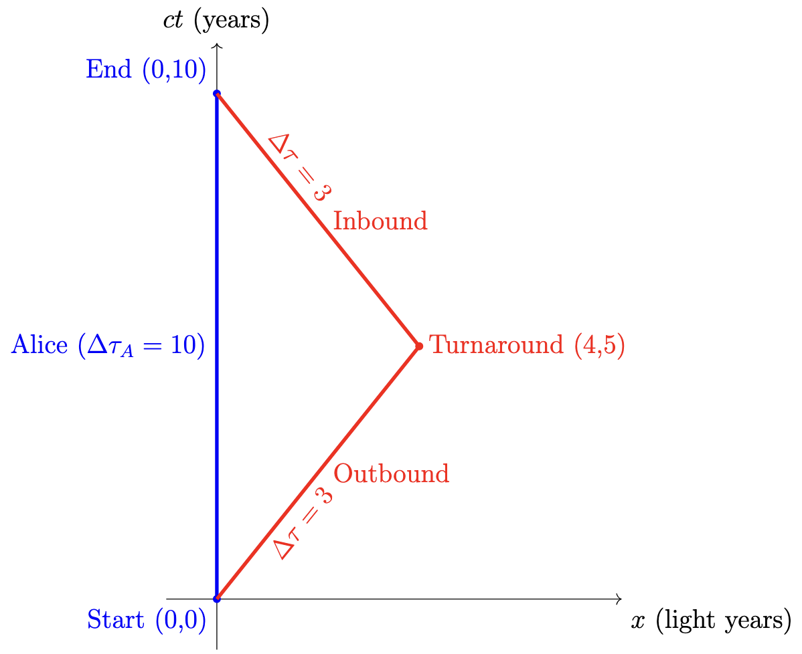
(a) Alice’s frame.
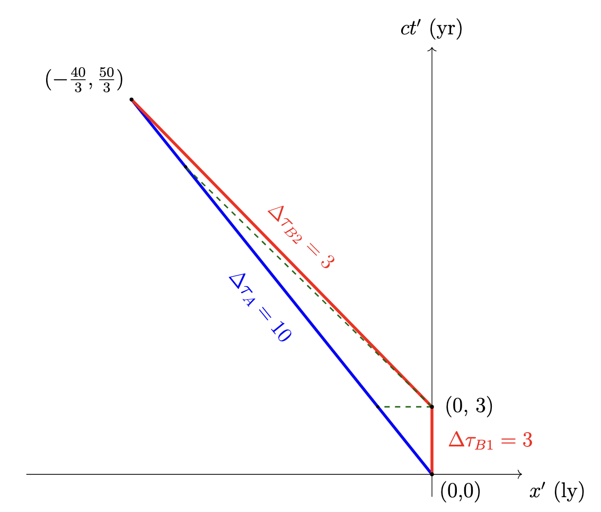
(b) Bob’s Outgoing frame
Figure 1.1: Spacetime diagrams showing the worldlines for Alice and Bob
is invariant. It does not matter which frame we use to calculate it. Let’s choose the
frame where Alice worldline starts and ends on the time-axis; see figure 1.0a. For inertial motion
between two events, the worldline is a straight line.
So when they meet again, 6 years will have passed for Bob but 10 years for
Alice.
Let’s now pick the frame where Bob outgoing part on the trip is on the time axis; see figure 1.0b. We
want to do a rotation in the \(t\)-\(x\) plane; a boost. For a boost in the \(x\)-direction, the non-zero components of \(\Lambda ^{\mu }_{\ \nu }\)
are:
In this new frame, Alice appears to travel to \(x' = -40/3\)
light-years over a coordinate time of \(t' = 50/3\) years. The length of her worldline remains the same:
Its transformation properties can be understood by considering its effect
on a scalar function \(\Phi (x)\). The value of the function in the primed coordinate system is taken to be equal to
the value in the original system:
Thus, \(p^2\) gives the squared invariant mass \(m\) of a particle. Note that for a virtual particle, \(E^2 - \boldsymbol {p}^2\)
can take any value; virtual particles can be “off mass shell”.
means that if energy and momentum conservation hold in one inertial frame, then they
hold in any other inertial frame. However, energy and momentum themselves are not Lorentz invariant;
their values depend on the chosen inertial frame.
We treat the term in the brackets as a difference of squares, \(A^2−B^2\)=\((A-B)(A+B)\),
where: \(A=(M^2+m_1^2-m_2^2) \) and \(B=2Mm_1\). Applying the difference of squares:
which is the same as the expression for \(E_2\)
in this case, as expected. At large when working with a massless particle solving for its energy typically
reduces the algebra needed.
In this chapter, we will briefly describe the main concepts that allow us to connect our theory with
experiments. We need quantities that can be calculated using our theory and then measured
experimentally. In particle physics, the main such quantities are decay rates and scattering cross sections,
which correspond to transitions between states.
The Standard Model (SM) is a highly successful theory when it comes to predicting and incorporating
experimental results; for example, see figure 2.1. Furthermore, attempts to experimentally confirm
extensions of the SM or to search for completely new physics beyond the SM (BSM) also rely on these
observables.
In the next chapters, we will establish the basics of the theory before returning to the calculation of
cross-sections and decay rates using Feynman rules, and then compare them with experimental
results.
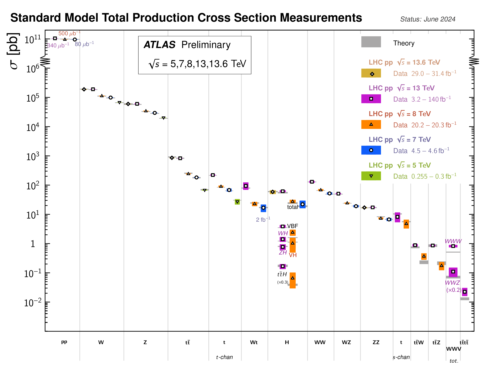
Figure 2.1: Summary of several Standard Model cross-section measurements.
A physical state is a possible physical situation, with particles moving here and there, collisions
occurring, people taking walks, and all kinds of things happening. The situation at some moment may be
viewed as a boundary condition: if one knows the entire situation at a given moment, and one knows the
laws of nature, then in principle one can deduce the rest.
The way quantum mechanics handles physical states can be condensed into five postulates:
1. State Representation
The state of a physical system is described by a vector \(\ket {\psi }\) in a complex Hilbert space. The state is
technically a ray; vectors \(\ket {\psi }\) and \(e^{i\phi }\ket {\psi }\) represent the same physical state, as the global phase \(\phi \) is
unobservable.
2. Observables
Every measurable physical quantity corresponds to a Hermitian operator \(A\) acting on the Hilbert space.
The condition \(A = A^\dagger \) ensures that the eigenvalues \(a_1, \dots , a_n\) are real numbers, allowing them to be interpreted as the
possible physical values of the observable.
3. Unitary Equivalence at Different Times
The relationship between the system at different times is described by a unitary operator \(U\). This
transformation preserves the scalar product \(\braket {\psi \mid \psi }\), ensuring that the total probability remains constant
throughout the system’s evolution.
4. The Born Rule
The probability of obtaining the measurement outcome \(a_j\) for an observable \(A\) in the state \(\ket {\psi }\) is given by
the squared modulus of the scalar product between the state and the corresponding eigenvector \(\ket {a_j}\):
5. The Projection Postulate
Immediately after a measurement that yields the eigenvalue \(a_j\), the system is in the corresponding
eigenstate \(\ket {a_j}\). A subsequent measurement of the same observable performed immediately afterwards will
yield the same outcome \(a_j\) with probability 1.
In your previous courses, you have likely encountered a “recipe” typically called canonical
quantisation: one starts with a classical looking theory as a blueprint, performs specific mathematical
manipulations, and arrives at a corresponding quantum theory. Through this procedure, one obtains
operators: position, spin, momentum, and others. The classical theory is then recovered in the limit where
quantum effects are negligible. This procedure can begin with a classical theory of particles,
which is most likely what you have seen, or a classical theory of fields. In the latter case,
we enter the realm of Quantum Field Theory (QFT), where classical fields are promoted to
operators.
Later, in your particle physics course, you learned how to apply quantum mechanics using
perturbation theory (typically the so-called Born approximation) to calculate the relevant amplitudes for
various processes.
Let me repeat a customary warning, that you have probably heard multiple times. You should avoid
thinking it terms of classical trajectories. Even in Bohm type theories, that admit particle trajectories
these are non-classical and non-local [9]. In the standard approach to quantum mechanics, it is easier to
think in terms of transition amplitudes between different states. These amplitudes can be calculated
using the Feynman rules.
We will take the view that, as John Bell put it, the standard quantum-mechanical algorithm is good
enough For All Practical Purposes. Obviously, there are foundational questions [9]. Our main aim would
be to establish a mapping between the blueprint of the theory, the Standard Model Lagrangian and the
corresponding Feynman rules that characterise the quantum theory (at least at the level of perturbation
theory). This will allow us to understand the basis of the theory and its relation to experimental
results.
In a typical particle physics experimental arrangement, incoming particles are produced, accelerated,
allowed to scatter, and the collision products are registered in a detector. The time scales are such that
the collision time is much shorter than the acceleration period or the time of flight from the collision
point to the detector. Hence it makes sense to think of a particle, described by a quantum- mechanical
wave packet, starting at \(t=-\infty \), colliding with some other particle at \(t=0\), and the collision products being detected
at \(t=+\infty \).
We can also consider the case of a particle that was produced at some time, and at a
later time propagates to some detector. If the particle is stable, the incoming and outgoing
state will be the same. If it is unstable, its decay products will correspond to the outgoing
state.
The S-Matrix
The usual setup is one where we divide particles into two groups: \(\ket {\mathrm {i}}\) is the physical state at an early
time (\(-\infty \)), and \(\ket {\mathrm {f}}\) is the physical state at a much later time (\(+\infty \)). We define the S-matrix operator \(\hat {\mathcal {S}}\) as an
operator that connects the physical states between these two times:
A particular S-matrix element \(S_{fi}\) is then the amplitude for the physical state to be \(\ket {\mathrm {i}}\) at \(-\infty \) and \(\ket {f}\) at \(+\infty \):
For this to hold,
the scattering operator must satisfy the unitarity condition:
\begin{equation} S^\dagger S = I. \end{equation}
If the state is \(\boldsymbol {q_1},\dots ,\boldsymbol {q_m}\) at \(-\infty \) and \(\boldsymbol {p_1},\dots ,\boldsymbol {p_n}\) at \(+\infty \) we can write
Notice, that here we can use \(\mathbf {q}\), the three vector, as these states are on-shell free particles with a definite
mass.
Relativistic Normalization
In non-relativistic quantum mechanics, the normalization constant for a one-particle state is
conventionally fixed by the requirement of one particle in volume \(V\):
This normalization is not the most
appropriate as the spatial volume \(V\) is not Lorentz invariant but contracts along the direction of motion. A
more convenient Lorentz-invariant normalization is \(2E\) particles per unit volume:
The factor of 2 is not
strictly necessary but is convenient. The difference between relativistic and non-relativistic
normalization (Eq. 2.7) is a factor of \((2EV)^{1/2}\) for each particle. For a multi-particle state, this becomes:
The Invariant Matrix Element
If the particles do not interact at all, \(\hat {\mathcal {S}}\) is simply the identity operator \(I\). We isolate the interesting
interaction part by defining the transition operator \(\hat {\mathcal {T}}\):
We want to use the square of \(\hat {\mathcal {T}}\) to obtain the
transition amplitudes, but to do so it needs to be normalized to unity. Therefore, we connect the
invariant matrix element \(\mathcal {M}\) with the transition matrix element \(T_{fi}\) as follows:
Here we have extracted a factor
\((2\pi )^4 \delta ^{(4)}(P_f - P_i)\) for the overall four-momentum conservation and we use the normalization from equation 2.9. The
S-Matrix can therefore be written as:
The matrix element \(\mathcal {M}\) is useful because it allows us to separate all the physics that depends on the
details of the interaction (“dynamics”) from all the physics that does not (“kinematics”). It is important
to note that by factoring out the normalization constants and the four-momentum delta function, the
resulting matrix element \(\mathcal {M}_{fi}\) is a Lorentz scalar. This means that \(\mathcal {M}_{fi}\) takes the same value in all inertial
reference frames. Later in the course, we will see how one can compute \(\mathcal {M}\) using the Feynman diagram
calculus.
Consider a decay process where the initial state is a single particle with four-momentum \(p\) and mass \(M\),
and the final state is given by \(n\) particles. It can be shown that, by applying Fermi’s Golden
Rule in a relativistic setting (Appendix B), the formula for the differential decay rate is:
where we used \(p'_z = \gamma (p_z - \beta E)\) for the first equality, \(E^2 = p_x^2 + p_y^2 + p_z^2 + m^2\) for the second, and \(E' = \gamma (E - \beta p_z)\) for the last. Therefore
The factor \(1/(2E_p)\) can be written as \(1/(2 \gamma M)\). Therefore, the rate \(\Gamma \) is smaller by a factor \(\gamma \) in a moving frame with
respect to the rest frame. The lifetime of a particle is the inverse of its total decay rate and
therefore becomes larger by a factor \(\gamma \).
When a particle can decay via various decay modes, \(\Gamma _i\) are the partial decay rates corresponding to each
decay mode \(i\) and the total decay rate is \(\Gamma = \sum _i \Gamma _i\). The quantity
where \(|\boldsymbol {p}^*| = |\boldsymbol {p}_1| = |\boldsymbol {p}_2|\) is the magnitude of the momentum of the final-state particles in the
rest frame of the decaying particle:
Consider an idealized sketch, figure 2.3, of a scattering experiment, such as the Rutherford experiment.
In such an experiment, a beam of particles collides with a fixed target. Detectors are then appropriately
placed in order to measure the scattering angle of the outgoing particles.
The situation can be described as having a bunch of target particles \(A\), with density \(\rho _A\) (particles per
unit volume), to which we aim another bunch of particles of type \(B\), with number density \(\rho _B\)
and velocity \(v\), as shown in figure 2.4. The total number of scattering events is proportional
to the particle densities \(\rho _A\), \(\rho _B\), the lengths of the bunches \(l_A\), \(l_B\), and the area \(A\) common to the two
bunches.
The cross section has units of area. It can be seen as the effective area of a
“piece” taken out from one of the bunches by each particle in the other bunch, which then becomes part
of the final state.
The differential cross section for a process with \(n\) final-state particles is given by:
The factors \(I\), \(\mathcal {M}_{fi}\), and \(d^3 \mathbf {p}_i / (2E_i)\) are all Lorentz invariant, which ensures that the
resulting cross section is independent of the reference frame.
Two Particle to Two Particle Process
For a 2-particle \(\rightarrow \) 2-particle process, see figure 1.2, the differential cross section is most easily expressed
in the centre-of-mass frame:
where \(p_i\) and \(s_i\) denote the four-momenta and spin states
of the respective particles.
What we have established so far are the formulas to handle the kinematics. There are, however, quite
a few open questions. How are the free electrons, positrons, muons and anti-muons states to be
described? Perhaps, more importantly, how does one calculate the matrix element \(M_{fi}\) for such a
process?
In the next chapters, we will try to answer these questions before returning to the calculation of this
cross section.
Actually, we could reach this point without working explicit on the rest frame of the
particle.
We need to calculate the momentum \(\mathbf {|p*|}\) of the outgoing particles in the rest frame, as this is needed for
the decay rate formula 2.18. The three momenta of the two outgoing particles have the same magnitude,
for a massless outgoing particle particle \(E = \mathbf {|p|}\), and the decaying particle has 0 three momentum in its
rest frame. This that combination will readily give us \(\mathbf {|p^*|}\):
The expression for \(\langle |\mathcal {M}|^2 \rangle \) contains no angular dependence. So the integration over the solid angle \(\int d\Omega ^*\) in 2.18
evaluates simply to \(4\pi \).
In short both roads lead to Rome. Later on the course we will be performing quite of few
more calculations like these. Let me warn you the algebra is straightforward but can become
formidable. A give problem can take a few lines or few pages depending on how experienced
one is. So if you not feel confident please practice the kinematic derivations in these notes,
without looking at the solutions. A few more examples can be found in the bibliography for
example [2].
In this section we will take a look at the Maxwell equations, a familiar set of relativistic equations
governing electromagnetic fields. The main focus will be on gauge invariance and especially on how it
allows us to derive the properties of the photon.
Here, \(A^\mu = (A^0, \boldsymbol {A})\) and \(J^\mu = (\rho ,\boldsymbol {J})\). \(\rho \) is the local charge density and \(\boldsymbol {J}\) is the current density. \(A^0\) is the scalar potential and
represents the energy per unit charge locally available, while the vector potential \(\boldsymbol {A}\) represents the
momentum per unit charge locally available for exchange between charged matter and the
field.
A “feature” of the covariant formulation of Maxwell’s equations is that the four-vector potential is not
uniquely determined. A transformation of the form
A change of the potential that has no effect on the fields is called a gauge transformation. We can use
this freedom to choose a function \(\lambda \) in such a way that
After performing a gauge
transformation we can relabel \(A'_\mu \to A_\mu \); the transformed potential is physically equivalent to the original.
Dropping the primes, we obtain the Lorenz (Ludvig Lorenz, not Hendrik Lorentz) gauge condition
Gauge invariance is a redundancy of the description that involves an arbitrary function of time and
position. It means that there are different but equivalent mathematical descriptions of the
same physics. In practical terms, this freedom can be used to clarify certain aspects of a
theory.
Here, let me not that in classical electrodynamics, the electric and magnetic fields are usually
considered as the basic quantities whereas the four-potential is typically viewed as a convenient
mathematical object. In quantum mechanics, the four-potential acquires a direct physical significance, as
was first pointed out by Aharonov and Bohm [12] and experimentally confirmed by Tonomura et al. [13];
see also Appendix C.
Here \(\epsilon ^\mu (p)\) is a four-vector that describes the polarisation and depends on the four-momentum \(p\). You might
be more familiar with the following notation
since \(E = \hbar \omega \) and \(\boldsymbol {p} = \hbar \boldsymbol {k}\), and in natural units \(\hbar =1\). We will be working with \(E\),
\(\boldsymbol {p}\) and \(p_\mu \).
At this stage we have a vector field with four components, meaning that the polarisation has four
degrees of freedom. We know that the photon is massless and has two polarisation degrees of
freedom.
The four components of \(\epsilon ^\mu \) are not independent. For
example, assuming the photon is moving along the z-axis \(p^\mu = (E,0,0,E)\), we have
We are not yet finished: we know that the photon has only two physical degrees of polarization. For a
photon moving along the z-axis \(p^\mu =(E,0,0,E)\), we can construct a basis for the three remaining degrees of freedom
allowed by the Lorenz gauge:
This basis satisfies the condition \(\epsilon ^\mu p_\mu = 0\) for \(p^\mu =(E,0,0,E)\). But \(\epsilon ^{(3)\mu } \epsilon ^{(3)}_\mu =0\). If we insist on keeping three
independent degrees of freedom for the polarization, one of them has zero norm. Actually, the momentum
and the “longitudinal” state \(\epsilon ^{(3)\mu }\) are proportional
the
longitudinal polarization degree of freedom vanishes as expected.
The Physical Photon
The end result is that the photon is transversely polarized. Instead of four independent solutions, we
are left with two. A massive vector boson has three spin states, leading to three polarisation components;
these include a longitudinal component along the direction of motion. But a photon is massless: it cannot
be at rest and therefore has only two.
In the description of the electromagnetic field there seem to be photon degrees of freedom that can
not be observed, do not interact with matter but are part of the formalism. It was only when we used a
specific gauge, radiation gauge, that we avoided the longitudinal polarisation for the photon. If we had
taken a fully Lorentz invariant approach, e.g. use only the Lorenz gauge, longitudinal photons
would have appeared. But these extra degrees of freedom would be “spurious” and would not
affect the end result of any calculation. The different descriptions are equivalent in terms of
physics.
which we will call the standard replacement. Notice, that we are dropping the
“hat \(\hat {}\)” symbol, the different between the operator and four-momentum is typically clear by
the context, an operator acts on quantum state. Applied to a wavefunction \(\psi (\boldsymbol {x},t)\) this leads to
the time dependent Schrödinger equation:
which is first order in time and second order in
space.
In standard Quantum Mechanics the probability to find an electron somewhere is one, and it should
be conserved. This implies that the rate of decrease of the probability in a given volume is equal
to the net flux out of the volume:
where the last equation is Gauss’s law, and \(\mathbf {\hat {n}}\) is the unit
vector along the outward normal to the elements \(dS\) of the surface \(S\) enclosing the volume \(V\). The
probability and probability current (or flux) densities are related by the continuity equation:
and using
the Schrödinger equation \(i\frac {\partial }{\partial t} \psi = H \psi \) (and its complex conjugate) leads to
\begin{equation} \frac {\partial \rho }{\partial t} = i \psi ^* H \psi - i \psi (H \psi )^* . \end{equation}
The recipe can be expressed as
multiplying the Schrödinger equation by \(i\psi ^*\) and its complex conjugate by \(i\psi \), then subtracting. The
motivation is that Hermitian terms, such as the potential term, cancel automatically, leaving only
derivative contributions that can be written as a divergence, as required by the continuity equation,
yielding a conserved current.
We can repeat the same argument for the Hamiltonian as in the case of the Schrödinger equation, but
now starting from the Lorentz invariant free-particle energy
Substituting in 4.13 we get
for the energy eigenvalues:
\begin{equation} E = \pm \sqrt {\boldsymbol {p}^2+m^2}. \end{equation}
So, in addition to positive energy solutions we also have negative energy
solutions. We cannot ignore them as for a quantum system we have to use the complete set of
states.
Following the recipe described in the previous section for the probability and probability current, we
multiply equation (4.13) by \(i\phi ^*\) and its complex conjugate by \(i\phi \) and subtract. We get
Here, we used the fact that \(\phi \) and \(\phi ^*\) satisfy
the Klein-Gordon equation.
The issue is probability densities can now be negative. We can readily check this by introducing
plane-wave solutions, and using \(\phi ^*\phi = \phi \phi ^* = |N|^2\), we obtain
\begin{equation} \rho = i \left ( \phi ^* (-iE) \phi - \phi (iE) \phi ^* \right ) = E (\phi ^*\phi + \phi \phi ^*) = 2|N|^2 E. \end{equation}
Negative energy solutions lead to negative probability
densities. Historically, this is the problem that motivated Dirac to find an alternative equation. The
eventual solution is that we should treat \(J^\mu \) not as a probability four-current but as a four-current relating
to particle or charge density
We saw that the Klein-Gordon equation has states with negative probability. This is a consequence of it
being a second order (in \(t\)) differential equation. As a way around it, we try to write a first order equation:
Where \(\boldsymbol {\alpha }\) and \(\beta \) are coefficients to be determined. We still have to satisfy the correct dependence between
energy and momentum \(H^2 \psi = \left ({ \mathbf p}^2 + m^2 \right ) \psi \).
where we used the fact that \([p_x, p_y]=0\). For this expression to be equal to \(({\mathbf p}^2 + m^2)\psi \) the \(\alpha _i\) and \(\beta \)
coefficients need to satisfy the following:
where we have introduced the anti-commutator
indicated with the curly brackets. Since the coefficients do not commute, they cannot simply be
numbers, so we are led to consider matrices operating on a multicomponent column vector
\(\psi \).
The four \(\alpha \) and \(\beta \) matrices need to have:
Zero trace (sum of the elements on their main diagonal)
where we have used the fact that \(\mbox {Tr}(AB) = \mbox {Tr}(BA)\) and the
commutation relations above.
+1 and -1 eigenvalues. To prove this, consider an eigenvector \(Y\):
\begin{equation} \alpha _i Y = \lambda Y. \end{equation}
Multiplying by \(\alpha _i\) we get
\begin{equation} \alpha _i^2 Y = \lambda \alpha _i Y = \lambda ^2 Y, \end{equation}
which
implies, since \(\alpha _i^2 = 1\), \(\lambda =\pm 1\)
Even dimension, because the sum of the eigenvalues of a matrix is equal to its trace. The matrices
have eigenvalues \(\pm 1\), so for the trace to be 0 they need to have even dimensions.
Finally, they must be Hermitian, since the \(H\) operator itself is Hermitian (e.g. \(\beta ^\dagger = \beta \) and \(\alpha _i^\dagger = \alpha _i\)).
The lowest dimensionality matrices satisfying all these requirements are \(4 \times 4\). A four-component column vector
that satisfies the Dirac Equation 4.25 is called a Dirac spinor.
The fact that spinors have the same dimension as space-time can generate some confusion. The
components of a Dirac spinor do not transform as a four-vector when you go from one inertial system to
another. We will see later in the course how they transform. For now, it is important not to think of
spinors as four-vectors in the Lorentz sense.
There is a point worth noting. Since each component obeys the same wave equation, we would expect
the physical states they represent to have the same energy. This would mean that the different
components represent some degeneracy; associated with a new degree of freedom that relates to spin. We
will return to this point later in the course, but if you want to see some more details consult
appendix D.
The Dirac equation is usually expressed in a form which emphasises its covariance (form invariance). On
multiplying the Dirac equation 4.25 by \(\beta \) and substituting the operators we obtain
\begin{equation} \begin {aligned} & i \beta \frac {\partial \psi }{\partial t} = - i \beta \boldsymbol {\alpha } \cdot \boldsymbol {\nabla } \psi + m \psi , \end {aligned} \end{equation}
which can be written
as
\begin{equation} \label {eq:DiracCovariant} \begin {aligned} & (i \gamma ^\mu \partial _\mu - m) \psi = 0, \end {aligned} \end{equation}
Summation over repeated \(\mu \) indices is
implied. Despite the suggestive way it is written, the Dirac \(\gamma \) matrices are not four-vectors; they are
constant matrices, the same in any reference frame. Equation 4.33 is called the covariant form of the
Dirac equation.
It is worth noticing that the Dirac equation is actually four differential equations coupling the four
components of \(\psi \). The four equations, \(j=1,2,3,4\), can be written as
where we used \((AB)^\dagger = B^\dagger A^\dagger \) and the anti-commutation
relationships from equation 4.27. These are usually written compactly as
The choice of the four \(\gamma ^\mu \) matrices is not unique. The physics depends only on the properties listed in
equations 4.27 and 4.38. It is only when we need explicit solutions of the Dirac equation that we use a
particular representation. The two most commonly used are the Dirac-Pauli representation
Repeating the same procedure as for the Klein-Gordon equation we can derive a continuity equation for
the Dirac equation, except that, as we now have a matrix equation, we must consider the Hermitian
conjugate rather than the complex conjugate. The Hermitian conjugate of
To restore the manifestly
Lorentz invariant form (to write \(\gamma ^\mu \) times the time and space derivatives) we want to remove the minus sign
of the \((-\gamma ^i)\) while leaving the first term unchanged. Since \(\gamma ^0\gamma ^i = - \gamma ^i\gamma ^0\) we can do this by multiplying from the right by
\(\gamma ^0\). We introduce the adjoint (row) spinor
We can now derive a continuity
equation by multiplying equation 4.47 from the right with \(\psi \) and equation 4.33 from the left
with \(\bar {\psi }\) and add them:
For the covariance of the continuity equation, \(\partial _{\mu } J^{\mu } = 0\), it is necessary that \(J^{\mu }\) transforms as a four-vector. So \(\bar {\psi }\gamma ^{\mu }\psi \)
looks like and is a four-vector. As we noted before \(\gamma ^\mu \) are just four constant matrices. They do not change
when going to another inertial frame. It is the \(\psi \) terms that actually transform, and they do it in such a
way that makes the full “sandwich” a four-vector.
We substitute in equation 4.33 noticing that the time and position dependence appears
only in the exponent, the \(u(E, \boldsymbol {p})\) is only a function of the energy and momentum. We therefore
obtain
\begin{equation} \label {eq:Dirac_gamma} (\gamma ^{\mu } p_{\mu } - m) u = 0, \end{equation}
or using the abbreviated slash notation \(\not \!p = \gamma ^{\mu } p_{\mu }\):
\begin{equation} (\not \!p - m) u = 0. \end{equation}
This is an algebraic equation. Let us look at
the solutions for a particle at rest, with \(E=m\) and \(\boldsymbol {p}=0\). In this case the Dirac equation is simply:
\begin{equation} (\gamma ^0 p_0 - m) u(E,0) = 0 \implies E \gamma ^0 u = m u. \end{equation}
In the Dirac-Pauli representation \(\gamma ^0\) is a diagonal matrix. In that representation it is easy to obtain four
orthogonal solutions based on the eigenvectors and eigenvalues of \(\gamma ^0\):
The factor \(N\) is a
normalisation constant. The first two solutions have positive energy eigenvalues \(E = +m\) and the last two have
negative energy eigenvalues \(E = -m\). In terms of \(\psi _i\), the solutions are:
The first two general solutions in the previous section have positive energy eigenvalues
\begin{equation} E = +\sqrt {p^2+m^2}, \end{equation}
while the last two
have negative energy eigenvalues
\begin{equation} E = -\sqrt {p^2+m^2}. \end{equation}
At the end, we did not get rid of the negative energy solutions. We can, however, interpret negative
energy solutions as positive energy solutions for particles that travel back in time:
where \(-E\) is positive. An
electron travelling back in time is equivalent to a positron travelling forward in time. This is the
Feynman-Stüeckelberg interpretation. We reverse the signs of energy and momentum:
leading to the
following form of the Dirac equation for antiparticles:
\begin{equation} \label {eq:Dirac_gamma_anti} (\gamma ^{\mu } p_{\mu } + m) v = 0 \implies (\not \!p + m) v = 0. \end{equation}
This equation also has two positive (\(v^{(1)}, v^{(2)}\)) and two
negative value solutions (\(v^{(3)}, v^{(4)}\)).
We can replace the negative energy solutions (\(u^{(3)}, u^{(4)}\)) of the particle equation with the positive energy
solutions of the antiparticle equation:
We will mainly working with a set of four independent solutions \([u^{(1)}, u^{(2)}, v^{(1)}, v^{(2)}]\)
that all represent particles with positive energy.
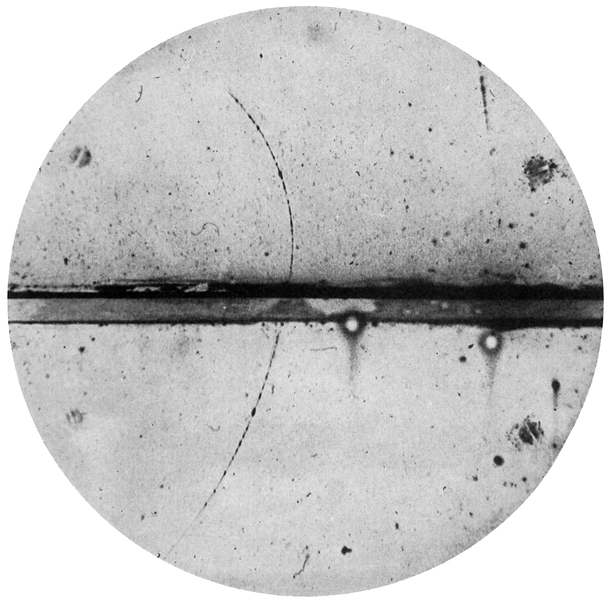
Figure 4.1: Cloud chamber photograph by C. D. Anderson of the first positron ever identified. The
particle enters from the bottom, strikes the lead plate, and loses energy, as seen from the greater
curvature of the upper track.
At the time Dirac proposed his equation, no one had suggested a new particle with positive charge
and the mass of an electron. In 1932, Carl Anderson was observing cosmic rays in a cloud chamber within
a strong magnetic field. Some of the particles were bending in a way that indicated a positive charge, as
seen in figure 4.1.
We work out the normalisation factor \(N\) by imposing the conventional normalisation of \(2E\) particles per unit
volume. For \(u^{(1)}\), this means:
we obtain the adjoint spinors \(\bar {u} \equiv u^\dagger \gamma ^0\) and \(\bar {v} \equiv v^\dagger \gamma ^0\). It is useful to note that the spinors are orthogonal:
The Dirac equation has a twofold degeneracy, meaning that for each momentum there are two
independent solutions of positive energy and two independent solutions of negative energy. This indicates
that there must be another observable which commutes with the Dirac Hamiltonian and whose
eigenvalues can allow us to distinguish the states.
We can start from the definition of the spin matrices for Dirac particles:
We will need an operator that commutes with the energy operator, and whose eigenvalues can
distinguish the solutions. For stationary electrons 4.56 the energy operator is \(\beta m\). The operator
commutes with \(\beta \) and allows us to obtain the spin along the \(z\)-axis (\(s_z\)). We can then readily verify
that, for the stationary electron solutions, the positive energy solution \(u^{(1)}\) corresponds to \(s_z = 1/2\) and \(u^{(2)}\)
corresponds to \(s_z = -1/2\), while for the negative energy solutions \(u^{(3)}\) corresponds to \(s_z = 1/2\) and \(u^{(4)}\) corresponds to
\(s_z = -1/2\).
The spin operator does not commute with the Dirac Hamiltonian (see appendix D). Hence, we need
to find another operator whose eigenvalues can be used to distinguish the two states. For the general case
the most useful is the helicity operator. Helicity is defined as the normalized spin projection along the
direction of motion:
Helicity can be used to separate states with
positive helicity \(u_\uparrow \) and \(v_\uparrow \) and with negative helicity \(u_\downarrow \) and \(v_\downarrow \). Helicity is not invariant under Lorentz
transformations for massive particles. This is because one can always boost to a different frame in which
the 3-momentum is flipped but the spin remains the same.
The property of chirality is an important concept in the Standard Model, but unfortunately, unlike
helicity, it does not have a classical concept to compare it with. Chirality is introduced by defining the \(\gamma ^5\)
matrix:
Notice that the projectors act oppositely on anti-particles than they do to particles. \(P_L\)
projects onto right-handed chiral positrons state and \(P_R\) projects onto left-handed chiral positron
states.
Helicity eigenstates exist for any spin.
The helicity for a photon corresponds to what we normally call polarisation. Helicity is conserved,
but is not Lorentz invariant for massive particles.
Chirality is a concept that exists for spinors. Chiral states are defined as the eigenstates of the
chirality operator \(\gamma ^5\). Chirality typically means that a theory is not symmetric under \(L \leftrightarrow R\). This is
something we will see for the theory of the weak interactions and is an important ingredient of the
SM. Chirality is Lorentz invariant but is not conserved (does not commute with the Dirac
Hamiltonian) for massive free particles.
The chirality eigenstates coincide with the helicity eigenstates only for massless particles. In this case
helicity and chirality are both Lorentz invariant and conserved. We will be using the terms right/left (\(_R\), \(_L\))
for chirality and positive/negative (\(_\uparrow \), \(_\downarrow \)) for helicity.
For a massive particle the positive and negative helicity eigenstates can be expressed as a mixture of
right and left chiral eigenstates. Similarly, the left and right chiral particle eigenstates can be expressed as
a mixture of negative and positive helicity eigenstates. The relative weights are
for the “wrong” component [8]. At the high energy limit the “wrong” component
vanishes. Therefore, in the high-energy limit, where particles can be considered massless, you
might find that helicity (or the term definite helicity) is often used interchangeably with
chirality.
In 1929 Weyl presented a theory for massless particles with spin \(1/2\). We will do the same by solving the
Dirac equation for a massless fermion. Let’s switch, perhaps not surprisingly, to the chiral or Weyl
representation:
where \(\gamma ^5\) is diagonal, unlike the Dirac-Pauli representation where \(\gamma ^0\) is diagonal.
The physics are the same. The Dirac representation is more convenient for studying energy
eigenvalues, while the chiral representation is more convenient for studying chirality eigenstates. We
multiply 4.52 from the left with \(\gamma ^5 \gamma ^0\):
Meaning that the right-handed chiral antiparticle state \(v_R\) in the massless limit
coincides with the positive helicity eigenstate \(v_\uparrow \). The solutions are shown in table 4.3 alongside their
corresponding helicity.
State
Spinor \(u^{(i)}\)
\(p_z\)
\(S_z\)
\(h\)
\(v_R^{(1)}\)
\(\sqrt {2E}\,(0,1,0,0)^{T}\)
\(-E\)
\(-\tfrac {1}{2}\)
\(+\tfrac {1}{2}\)
\(v_R^{(2)}\)
\(\sqrt {2E}\,(1,0,0,0)^{T}\)
\(+E\)
\(+\tfrac {1}{2}\)
\(+\tfrac {1}{2}\)
\(v_L^{(1)}\)
\(\sqrt {2E}\,(0,0,-1,0)^{T}\)
\(+E\)
\(-\tfrac {1}{2}\)
\(-\tfrac {1}{2}\)
\(v_L^{(2)}\)
\(\sqrt {2E}\,(0,0,0,-1)^{T}\)
\(-E\)
\(+\tfrac {1}{2}\)
\(-\tfrac {1}{2}\)
Table 4.3: Antiparticle spinor solutions for the Weyl equation and corresponding helicity, spin, and
momentum.
These equation are coupled via the mass
term, in or in other words the mass acts as the mixing of left and right chiral states. This kind of mass
term is called a Dirac mass term.
The covariance (form invariance) of an equation means two things:
(1)
Given two observers, Alice and Bob. There must be an explicit rule to calculate Bob’s solution
if Alice’s solution is given. Furthermore, these two solutions should describe the same physical
state.
(2)
According to the principle of relativity, which states that the laws of physics are the same in
every inertial system, the form of the equation should be the same for both observers.
It is perhaps easier to clarify some of the concepts involved starting from the simpler case of
the Klein-Gordon equation. Alice and Bob’s reference frames are connected by a Lorentz
transformation \(x'^\mu = \Lambda ^\mu {}_\nu x^\nu \). In Alice’s frame, the Klein-Gordon equation is
Thus,
the Klein-Gordon equation is covariant. Notice that, as mentioned above, this statement
has two parts: first, we have a rule connecting the solutions in the two frames; in this case \(\phi '(x'^\mu ) = \phi (x^\mu )\),
and second, the equation in the primed frame has the same form as the one in the original
frame.
Notice that again we have a rule connecting the solutions in the two
frames \(A'^\mu = {\Lambda ^\mu }_\nu A^\nu \) and the equation in the primed frame has the same form as the one in the original
frame.
Now, we can turn to the Dirac equation. We want to construct the transformation that relates \(\psi (x^\mu )\) to \(\psi '(x'^\mu )\). Since
the Lorentz transformation \(x'^\mu = \Lambda ^\mu {}_\nu x^\nu \) is a linear transformation of the coordinates, and the Dirac equation
is a linear differential equation, we can assume that the transformation we look for is also
linear:
Here \(\Lambda \) is the matrix representation of the Lorentz transformation \({\Lambda ^\mu }_\nu \). \(S(\Lambda )\) is a \(4\times 4\) matrix which
operates on the four-component spinor \(\psi (x)\). \(S(\Lambda )\) can depend, through \(\Lambda \), on the relative velocities and
relative spatial orientations of the two observers but is independent of the coordinates \((t,x,y,z)\). There
must also be an inverse transformation allowing Alice to transform Bob’s \(\psi '(x')\):
There
are 16 products of the form \(\bar {\psi }_i \psi _j\) (taking one component from \(\bar {\psi }\) and one from \(\psi \)), since \(i\) and \(j\) run from 1 to 4.
These 16 products can be assembled in linear combinations to construct quantities with distinct
transformation behaviour. An exhaustive list is given in Table 5.1, where \(\sigma ^{\mu \nu } = \frac {i}{2}(\gamma ^\mu \gamma ^\nu - \gamma ^\nu \gamma ^\mu )\) is an antisymmetric (\(\sigma ^{\mu \nu } = - \sigma ^{\nu \mu }\)) \(4\times 4\)
matrix.
Another way to think of it is this: \(I\), \(\gamma ^5\), \(\gamma ^\mu \), \(\gamma ^\mu \gamma ^5\), and \(\sigma ^{\mu \nu }\) constitute a basis for the space of all \(4 \times 4\) matrices; any \(4 \times 4\)
matrix can be written as a linear combination of these 16 products:
and have proven that they are consistent with special relativity. We have also seen how they can describe
scalar (\(\phi \)), spin-\(1/2\) (\(\psi \)), and vector (\(A^\mu \)) particles.
In terms of describing the \(e^+ e^- \to \mu ^+ \mu ^-\) process equation 2.27
we have a way to describe the free particle states at
\(\pm \infty \). However, a theory consisting only of free, non-interacting particles would not be very useful for
describing the physical world. Therefore, our next step will be to expand our treatment in order to
include interactions.
In this chapter, we will introduce the basics of the Lagrangian formalism. We will then discuss
Noether’s theorem and the concept of local gauge symmetry, which is central to the modern approach to
particle physics.
After establishing the structure of the theory, in the next chapters we will introduce Feynman rules
and proceed to calculations.
Making things consistent with relativity does not just need covariant equations, it requires us to account
for processes in which the number and types of particles change. We are led to abandon \(\phi \)
and \(\psi \) as probability amplitudes, which would have to define conserved positive probability
densities.
In order to understand the conceptual break lets take the example of a scalar field \(\phi (x)\). Classically, this
just means that for every point \(x^{\mu }\), the object \(\phi (x)\) returns a number. In a Quantum mechanical treatment, \(\phi (x)\)
becomes an operator. But what does it act on? The state of a system, at a specific time, lies in a Hilbert
space of states that have different numbers of particles (of each kind). Some examples of states include
\(\ket {0}\) vacuum,
\(\ket {p\ ; e^- }\) particle, \(e^-\), with momentum p,
\(\ket {\bar {p}\ ; e^+}\) antiparticle, \(e^+\), with momentum p,
\(\ket {p_1,\bar {p}_2\ ; e^-, e^+}\) pair of \(e^-\), \(e^+\) with momenta \(p_1\), \(p_2\).
In general, the field operators (\(\phi (x)\), \(\psi (x)\), \(A^{\mu }(x)\) etc) act on any state by adding or subtracting particles. The Hilbert
space is now spanned by states defined as containing definite numbers of particles and/or
antiparticles in each mode. If \(\Phi _n\), is a complete set of such states, then a measurement of particle
numbers in an experiment will yield a probability for finding the system in state \(\Psi \), given by
The dynamics and interactions of particles in a quantum field theory are described by the Lagrangian
density. We define the action for a relativistic field theory as:
\begin{equation} S = \int L \, dt = \int \mathcal {L} \, d^4x, \end{equation}
where
\begin{equation} L = \int \mathcal {L} \, d^3\boldsymbol {x}. \end{equation}
The \(\mathcal {L}\) is the Lagrangian density, but
we will simply call it the Lagrangian in most parts of this course. \(\mathcal {L}\) is a function of the fields and their
derivatives, \(\mathcal {L}(\phi _i, \partial _\mu \phi _i)\). The equivalent of the Euler-Lagrange equation for the equations of motion is
We now consider examples of Lagrangian densities, which at this stage may be regarded as classical
ones. It is important to keep in mind that they are not intended to be used directly as such
for calculating quantum mechanical amplitudes. Their role is to define the structure of the
theory.
The Dirac spinor \(\psi \) is a four-component complex spinor. It therefore contains
four complex components, corresponding to eight real degrees of freedom. In principle, one could describe
the system using eight independent real fields, given by the real and imaginary parts of each component.
However, it is more convenient to work directly with the complex fields \(\psi _j\) and their complex
conjugates.
We can decompose a complex field \(\psi \) into two real fields, \(\psi _1\) and \(\psi _2\):
and instead of varying the action with
respect to \(\psi _1\) and \(\psi _2\), we treat \(\psi \) and \(\psi ^*\) as independent variables. Both descriptions contain the same information,
but the latter is often algebraically simpler. This is analogous to describing a complex number \(z\): instead of
using \(\{\mathrm {Re}(z), \mathrm {Im}(z)\}\), one may equivalently use \(\{z, z^*\}\).
Following this approach, we treat the spinor \(\psi \) and its Dirac adjoint \(\bar {\psi }\) as independent variables when
applying the Euler-Lagrange equations. The Dirac Lagrangian can be written in component
form as
\begin{equation} (i \gamma ^\mu \partial _\mu - m) \psi . \end{equation}
Plugging the above into the Euler-Lagrange equation we
obtain
\begin{equation} i \gamma ^\mu \partial _\mu \psi - m \psi = 0. \end{equation}
That is the Dirac equation.
After establishing how the derivatives act on spinor fields, we can simplify the calculations. To find
the equation of motion for the adjoint spinor \(\bar {\psi }\), we vary the Lagrangian with respect to \(\psi \). Treating \(\psi \) and \(\bar {\psi }\) as
independent, the relevant derivatives are
where \(\alpha \) is some parameter that can be taken to
be small (that is, the symmetry is continuous) and \(\Delta \phi (x)\) is the field deformation. For internal
symmetries \(d^4x\) is unchanged, so the invariance of the action is equivalent to the invariance of
\(\mathcal {L}\).
For global internal symmetries it can be shown (see G.3), that the current defined, up to an arbitrary
constant, as
The other important distinction is between local and global symmetries. If \(\alpha \) in equation 6.29 is
constant, then we have a global symmetry. If the above transformation leaves the action invariant even
when \(\alpha \) is a function of \(x\), we have a local symmetry. Noether’s (first) theorem applies to continuous global
symmetries; local symmetries instead lead to identities between the equations of motion (Noether’s
second theorem) rather than independent conserved currents.
Not all symmetries are covered by Noether’s theorem; in particular, it does not apply to
discrete symmetries such as parity, time reversal, and charge conjugation (particle changing to
anti-particle).
The term gauge (scale) symmetry is a bit of a historical misnomer that originates from Weyl’s attempt in
1918 to employ scale invariance in the metric tensor in an effort to unify electromagnetism and gravity.
This attempt was unsuccessful, later Weyl applied the theory to the local phase symmetry of wave
functions.
We obtained a similar result to the one in section 4.5. The
interpretation, though, is not the same as we do not treat the fields as single particle probability
amplitudes. These Noether currents have an interpretation relating to conservation of electric
charge.
At this point we can couple the conserved Noether current to the electromagnetic vector potential \(A_\mu \) to
obtain the QED Lagrangian:
In what follows, we will use the convention of \(e\)
being the elementary charge, with \(Q=-1\) for the electron. We also recognise the Dirac Lagrangian
were essential in obtaining the
physical degrees of freedom of the photon.
It is therefore crucial to check that the Lagrangian 6.38 is invariant under gauge transforms. The
gauge transform for the fermion fields is obtained by promoting the global \(U(1)\) phase invariance to gauge,
local phase, invariance
where, with respect to equation 3.5, we have \(a(x) = e \lambda (x)\). The tricky part
seems to be the derivative acting on \(\psi \) which transforms as
bringing an additional \(-Q \bar {\psi } \gamma ^\mu \psi \partial _\mu a(x)\) term.
But this term is cancelled by the transformations of the interaction term
In the Standard Model, gauge invariance is one of the principles used to derive the dynamics of the
theory. In order to understand this point, we will reverse the argument: we will start from the free Dirac
Lagrangian and, by requiring gauge invariance, we will infer the existence of the electromagnetic field and
the relevant interaction structure of the theory.
The procedure that we will follow is not essential for deriving QED, but becomes important for
incorporating the weak and strong interactions, where no classical analogue exists.
As we have seen in the previous section, when starting from the free Dirac Lagrangian, the
problematic term is the derivative \(\partial _\mu \).
The need for the covariant derivative becomes clearer if we consider that in the derivative, we have \(\psi (x+\epsilon ) - \psi (x)\).
In order to subtract values of \(\psi (x)\) in neighbouring points we need to compensate for the difference in
phase transformation from point to point. In this sense the gauge field plays the role of a
connection that allows us to compare values of the \(\psi \) field at different points despite their arbitrary
phases.
We can now use equation 6.49 to derive the gauge transformation for \(A_\mu \). We have for the primed
covariant derivative
As we mentioned already terms \(\propto A_\mu A^\mu \) are not gauge invariant. The simplest gauge invariant scalar
term that we can include is \(\propto F_{\mu \nu } F^{\mu \nu }\).
The end result is that the QED Lagrangian becomes:
In summary, by demanding gauge invariance under \(U(1)\), the gauge transformations of \(A_\mu \) and the form of
the field tensor \(F_{\mu \nu }\) can be derived via the covariant derivative and its properties. The only reference to
classical electromagnetism comes from the choice of the constant \(-\frac {1}{4}\) in front of \(F_{\mu \nu } F^{\mu \nu }\). A different constant would
lead to a different normalization of the gauge field. The rest of the Lagrangian follows from the
requirement of \(U(1)\) invariance.
The formal language of symmetry is group theory; a short introduction to group theory is
given in the Appendix F. In this section, I will follow a practical approach. Let’s start by
summarising what we just did for QED. We established that the Lagrangian is invariant under the
transformation
The term \(e^{i Q \alpha }\) is equivalent to a \(1\times 1\) unitary matrix. In terms of group theory, this is a
representation of the group of points along a circle, or the group of unitary matrices \(U(1)\). The quantity \(Q\) is
called the generator of the group. It is a number and numbers commute, so this is an Abelian
symmetry.
When we promote this to a local symmetry \(\alpha = \alpha (x)\)— the derivative \(\partial _\mu \psi \) fails to transform in a gauge-invariant
way, because the phase choice is now different at every point in space-time. To fix this, we introduce the
gauge field \(A_\mu \) and the covariant derivative \(D_\mu \). In this sense the field \(A_\mu \) acts as a connection between different
points.
We can generalise this by imagining that our physical state that stays invariant under a symmetry is
not a single field \(\psi \), but a vector of fields. Historically, the first example of an internal symmetry, which
turns out to be only approximate, was nuclear isospin, where the proton and neutron were viewed as two
states of the same particle:
Notice that \(\Psi \) above is a two component column vector whose entries are
4-component Dirac spinors.
To rotate these states into one another, we need a \(2\times 2\) unitary matrix \(U\) with determinant 1. This is
the group \(SU(2)\), which has \(N^2-1 = 3\) generators. Notice that now we have to deal with matrices, which in
general do not commute. This is called a non-Abelian symmetry. The transformation is:
These satisfy the relation \([t^a , t^b] = i \epsilon ^{abc} t^c\). A relationship of the form
\begin{equation} \label {eq:group_algebra} [T^a,T^b] = i f^{abc} T^c. \end{equation}
is said to define the algebra of the
group. The \(f^{abc}\) are called structure constants. In the particular case of \(SU(2)\)\(f^{abc} = \epsilon ^{abc}\), where \(\epsilon ^{abc}\) is the Levi-Civita
symbol.
If we try to make this \(SU(2)\) symmetry local, we encounter a new requirement. Because there are three
independent ways to rotate a doublet (corresponding to the three generators \(T^1, T^2, T^3\)), we need three
independent connection fields, \(W_\mu ^1, W_\mu ^2, W_\mu ^3\).
Having introduced a gauge field for each Lie algebra generator, we must now include kinetic terms for
them. By analogy with QED, the gauge field Lagrangian has the form
Because these
gauge fields are constructed directly from the generators of the group, they transform under a
representation of the \(SU(2)\) group called the adjoint representation.
The other interesting case, in the context of the SM, is the \(SU(3)\) symmetry. In this case the physical states
are triplets. We have \(N^2-1 = 8\) generators, which consequently require the introduction of eight gauge
fields.
We will start by developing the dimensional analysis of fields and their couplings. We know from classical
physics that \(L\) has units of energy, which in our system of units is equivalent to units of mass, therefore it
has mass dimensionality {1}. As \(dx\) has units of length or \(\mathrm {mass}^{-1}\), \(d^3\boldsymbol {x}\) has units of mass\(^{-3}\). Since
\begin{equation} L = \int \mathcal {L} d^3\boldsymbol {x}, \end{equation}
it follows that \(\mathcal {L}\) has
mass dimensionality {4}. The same result can be derived by requiring the action to be dimensionless;
recall \(dt\) has units of time or \(\mathrm {mass}^{-1}\).
\begin{equation} S = \int L dt = \int \mathcal {L} d^4x, \end{equation}
After establishing that the mass dimensionality of \(\mathcal {L}\) is {4}, of \(S\) is {0} and of \(dx\)
is {-1}, we can evaluate the mass dimensionality of all fields and couplings in a theory. It is
easier to start from the kinetic terms of the free Lagrangian equations we have analysed
before. Since \(\partial _{\mu }\) has mass dimensionality {1} we can see that the scalar and vector boson fields \(\phi \), \(A^{\mu }\)
have mass dimensionality {1}, while the fermion fields \(\psi \), \(\bar {\psi }\) have mass dimensionality {3/2}.
Having established the mass dimensionality of the fields we can then easily determine the mass
dimensionality of the couplings that appear in interaction terms. Some examples are presented in
table 6.1.
Table 6.1: Mass dimensionality of various coupling constants.
In the context of the SM, there is an extra constraint that arises from the renormalisability of
the theory. The fact that QFT suffers from divergences was already realised around 1930
and was one of the main issues for its adoption. Later, it was understood that in certain
types of QFT these divergences can be reabsorbed in the redefinition of a finite number of
parameters.
The concept can be summarised as “observables are finite and, in principle, calculable functions of
other observables” [15]. In practice, this means the parameters entering the Lagrangian are
mathematical symbols called bare parameters. The real-world values we observe, such as the
physical mass or physical charge of the electron, are different and need to be determined by
experiment.
If, by fixing a small number of parameters, like the coupling strengths, from observation, every other
measurable quantity, like decay rates and cross sections, becomes a finite, calculable function
of those parameters, then the theory retains its predictive power. These theories are called
renormalisable.
A surprising effect of renormalisation is that the coupling constants are not constants, but depend on
energy. This is because we need to define the physical parameters at a specific energy scale relevant to the
process being measured.
Although the proof is complicated, the criterion for renormalisability is quite simple: the Lagrangian
should have terms with either positive mass dimension or be dimensionless [16]. A Lagrangian with terms
whose couplings have negative mass dimensions is not renormalisable.
It should be noted that the distinction between renormalisable and non-renormalisable theories can be
more technical than physical. For example, QED is a renormalisable theory, and so we could hope that it
describes nature up to arbitrary energies. But we know that already at around 100 GeV QED
merges with weak interactions in the SM. Renormalisability relates to the behaviour of a
theory at infinitely large energies or infinitesimally small distances. Rather than focusing on
renormalisability, the modern approach is to focus on the concept of effective field theory. In
this context the SM is considered as a “low-energy” approximation of a more fundamental
theory.
Making predictions for cross sections and decay rates means that we need a way to calculate the
matrix element entering equations 2.18 and 2.26. Feynman rules provide the final element we need in
order to achieve our goal of being to be able to calculate amplitudes for various processes and connect
them to experimental results.
We will follow a direct approach avoiding the QFT derivations. The Lagrangian provides the blueprint of
the theory, defining its structure. Its perturbative content, as used in particle physics calculations, is
given by the Feynman rules [17]. These, for all cases of interest in the SM, follow from the form of the
complete Lagrangian [4, 18, 19].
It is tempting to suggest that the Feynman rules themselves should be taken as the definition of the
theory. This is sufficient for phenomena that can be described using perturbation theory, such as the ones
we will be dealing with, but it does not capture the full content of the theory.
With this caveat in mind, in this course, we adopt the practical viewpoint that for each term in the
Lagrangian corresponds a Feynman rule that we can “read off”. We note that \(\mathcal {L}\) consists of two parts: the
free Lagrangian and the interaction part,
Terms with two fields of the same or different type involving derivatives are called kinetic terms, or, if
they involve the mass, they are called mass terms. Propagators correspond to internal lines in Feynman
diagrams. They can be read-off from the free part of the Lagrangian, using the terms that involve two
fields. The interaction vertices can be read-off from the interaction part, which involves all other terms
with three or more fields.
External lines in a Feynman diagram represent particles in the initial and final states. They carry definite
momentum and spin and satisfy the free field equations. The Feynman rules for external particles
are:
To obtain the rules for interactions one needs to form \(i\mathcal {L}_{\mathrm {int}}\), where \(\mathcal {L}_{\mathrm {int}}\) contains terms involving three or
more fields. If there are derivatives we apply the standard replacement \(\partial _\mu \to -i p_\mu \). The vertex factor is
then obtained by removing the field variables. In QED we have exactly one such term, \(-eQ \bar {\psi } \gamma ^\mu \psi A_\mu \); see
figure 7.1.
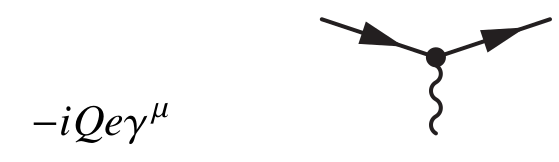
Figure 7.1: QED vertex.
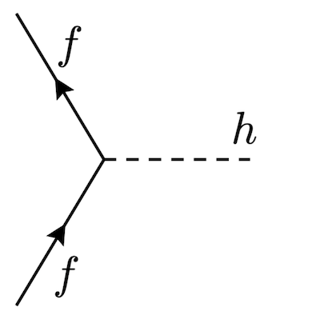
Figure 7.2: Fermion-Higgs interaction vertex.
In the spirit of adding another example and peeking a bit ahead: in the SM there is a simple
and very important interaction of a scalar field \(\phi \) with fermions:
The propagators are shown in figure 7.3 and figure 7.4. There is a factor \(i\epsilon \) added to handle the poles in
the denominators of the propagators. This is important for loop calculations, but is omitted in the
figures.
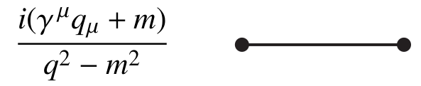
Figure 7.3: Fermion propagator in momentum space.
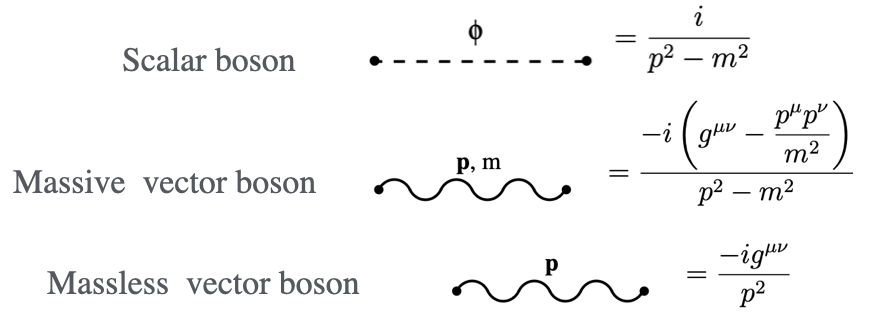
Figure 7.4: Gauge boson propagators.
Given the free part of a complete Lagrangian in the form
Below I sketch the “quick and dirty” derivation, the formal one has to proceed via QFT. For the
fermion propagator, the bilinear term in the Lagrangian is:
\begin{equation} P = i\gamma ^\mu \partial _\mu - m. \end{equation}
In momentum space, using \(\partial _\mu \rightarrow -ip_\mu \), the operator
becomes:
\begin{equation} \gamma ^\mu p_\mu - m \qquad \text {or} \qquad \not \!p - m. \end{equation}
To find the propagator, we require the inverse matrix \(P^{-1}\) such that \((\not \!p - m)P^{-1} = I\). Using the anti-commutation
relations of the \(\gamma \)-matrices we have:
For bosons, one may need to integrate the action by parts, throwing away a total derivative to bring
the Lagrangian into this bilinear form before inverting; for more details see Appendix H. For scalar
bosons, the operator derived from the Lagrangian is \(P = -(\partial _\rho \partial ^\rho + m^2)\). In momentum space this becomes \(P = -(-p^2 + m^2) = p^2 - m^2\). Applying the
rule \(iP^{-1}\) yields:
Figure 7.5: Some of the diagrams contributing to the \(e^+e^- \rightarrow \mu ^+ \mu ^-\) process [5].
A physical process is represented by the sum of all possible Feynman diagrams. In principle there are
infinitely many Feynman diagrams for each process; see for example 7.5.
Luckily for us, in most cases the dominant contribution to a decay rate or cross section arises from the
lowest-order (LO) diagram. The matrix element for the LO (top) diagram in figure 7.5 will have two
vertices, so it will be proportional to \(e^2\), and \(|\mathcal {M}|^2\) will be proportional to \(e^4\) or \(\alpha ^2\), where \(\alpha = 1/137\) is the dimensionless
fine-structure constant (see 1.2). In what follows we will be calculating the first term of a series like
ignoring higher-order terms. Notice that when squaring the full expression there are terms involving
interference of LO with NLO, so \(\alpha ^3\). In QED the result would still be correct at the \(\mathcal {O} (\alpha ^3/\alpha ^2 \approx 1\%)\) level by keeping just
the LO \(\alpha ^2\) term. Higher-order calculations, especially NNLO and N\(^3\)LO, are done with the help of dedicated
computer programs.
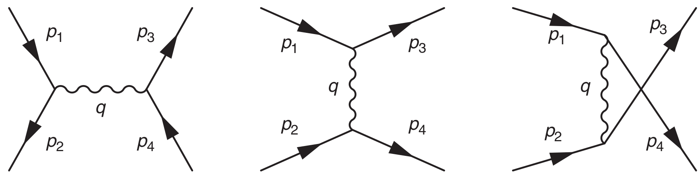
Figure 7.6: The Feynman diagrams for s-channel, t-channel and u-channel processes [5]. The
u-channel is the t-channel for “crossed identities”. It accounts for the case where we cannot tell
which incoming particle became which outgoing one. For the same reason, there are cases where
both an s-channel and t-channel are needed.
It is conventional to describe \(2 \rightarrow 2\) Feynman diagrams as a specific channel (\(s\), \(t\), or \(u\)). The channel is
determined by the topology of the diagram, where the corresponding Mandelstam variable equals the \(q^2\) of
the exchanged virtual particle; see figure 7.6.
The rules to operate with Feynman diagrams are:
Time will be along the horizontal axis.
Vertices are joined via internal lines.
Label each particle with its momentum. The momentum of internal lines is given by
four-momentum conservation.
For initial and final state particles introduce the appropriate spinor (for spin \(1/2\) particles) or
polarisation (for spin \(1\) particles). For scalar particles there is no factor.
For fermion lines the order is important. Follow a fermion line opposite the “flow of the
arrows”. These should form a “sandwich”: adjoint spinor, \(4 \times 4\) matrix, spinor. That is row vector,
matrix, column vector.
For each vertex encountered introduce the appropriate vertex factor.
For each internal line encountered introduce the appropriate propagator factor.
The result is \(-i\mathcal {M}\).
There are some additional rules when dealing with more than one diagram and loops:
Include a minus sign between diagrams that differ only in the interchange of two incoming
(or outgoing) electrons (or positrons), or of an incoming electron with an outgoing positron
(or vice versa).
For loops we need to integrate \(\int d^4k/(2\pi )^4\) over the indeterminate loop momenta and include \(-1\) for fermion
loops.
Finally, after a long journey, we are ready to perform some calculations. We will start with QED
processes, for which the Feynman rules are given in figure 8.1
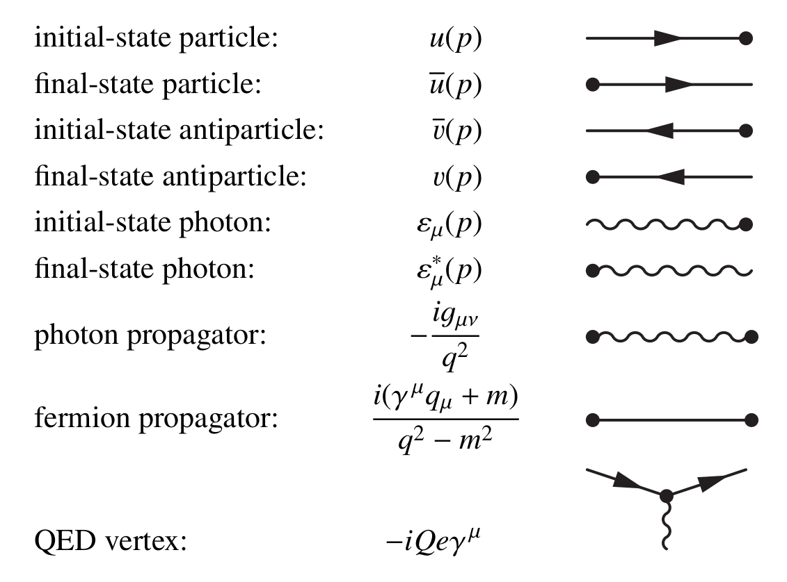
Figure 8.1: Feynman rules for \(-i\mathcal {M}\) [5]. \(u\), \(\bar {u}\), \(v\), \(\bar {v}\) refer to incoming/outgoing spin 1/2 particles. \(\epsilon _\mu \), \(\epsilon ^*_\mu \) to
incoming/outgoing spin 1 particles. For an incoming/outgoing scalar there is no factor. We take
\(e\) to be the elementary charge. The charge \(Q\) used is the one of the particle species, as opposed to
anti-particle, associated to a field. For electron the vertex factor is \(ie\gamma \), for up quark is \(-i \frac {2}{3}e\gamma \)
Figure 8.2: LO Feynman diagram for the \(e^+e^- \rightarrow \mu ^+ \mu ^-\) process [5].
The electron-positron annihilation process \(e^+e^- \rightarrow \mu ^+ \mu ^-\) is the simplest of the QED processes. It is also one of the
most important in high energy physics as is fundamental for understanding all results arising from \(e^+e^-\)
collisions. It will serve as our prototype LO calculation.
Notice that the terms inside \([\cdots ]\) are bilinear covariants section 5.4; in
this case, they are four-vectors, and the full expression is a scalar.
We use \(\nu \) for the contraction in the complex conjugate \(\mathcal {M}^*\) as \(\mu \) was already used for the contraction in
\(\mathcal {M}\).
Step 4 Spin sums and averages, Casimir’s trick:
In some experiments the incoming and outgoing particle polarisations are specified. In most
experiments the incoming particle beams are un-polarized so the measured cross section is an average
over the incoming particle polarisations. Also we do not typically restrict the measurement to particular
polarisation for the final particles. Therefore, for the total cross-section we sum over the final particle
polarisations.
Sums over polarisations can be greatly simplified using the completeness relationships. In the case of
incoming/outgoing fermions there is a an additional challenge. We have completeness relations for
spinors, but the spinors appear inside \(\left [\bar {u}(a) (4\times 4) u(b) \right ]\) terms. Therefore, some further algebraic manipulations are
required. The result can be encoded in the so-called Casimir’s trick
The relation \(\bar {\Gamma } = \Gamma \) holds for all cases that we will examine in this
course even if not shown explicitly. If either of the \(u_b\), \(u_a\) is replaced by \(v_b\), \(v_a\) the relevant mass sign for \(m_b\), \(m_a\) changes
to minus due to the completeness equations for spinors. Also, recall the abbreviated slash notation
\(\not \!p = \gamma ^{\mu } p_{\mu }\).
For the un-polarized electron positron annihilation using the Casimir trick we obtain
At this stage we
need to manipulate the trace of a complicated expression involving \(\gamma \) matrices. This is facilitated by a
number of theorems seen in table 8.1.
For the first trace, since the trace for a product of odd number of \(\gamma \) matrices is zero and using the
identities for four and two \(\gamma \) matrices, we obtain
The second trace is the same as the above with the
replacement \(1\rightarrow 3 \), \(2\rightarrow 4\), \(m_e\rightarrow m_\mu \), and all indices lowered. Therefore
Keeping track of the indices to obtain the correct
four-momentum pairings (1.12), employing the fact that \(g^{\mu \nu } g_{\mu \nu } = 4\) and ignoring the mass of the electron \(m_e\) but not
of the muon \(m_\mu \) we obtain:
Step 5 Specialize to a particular reference frame
In many cases it is easier to understand the results of a calculation when using a specific reference
frame. We notice that in the high energy, massless limit the Mandelstam variables become:
Figure 8.3: Differential cross section for the \(e^+e^- \rightarrow \mu ^+ \mu ^-\) process for four centre of mass energies. The dashed
line is the LO QED prediction. The solid line has additional contributions due to electroweak
interactions [20].
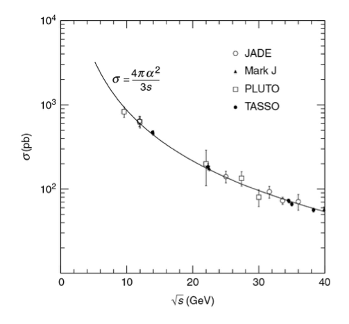
Figure 8.4: Total cross section as a function of the centre of mass energy for the \(e^+e^- \rightarrow \mu ^+ \mu ^-\) process [5].
Using 2.26 with \(|\boldsymbol {p_i^*}| = |\boldsymbol {p_f^*}|\) we get:
Here we used \(\alpha = e^2/4\pi \), where \(\alpha \) is the fine structure constant defined in natural units.
The differential cross section for the \(e^+ e^- \rightarrow \mu ^+ \mu ^-\) process has been measured; see figure 8.3. The \((1+\cos ^{2} {\theta })\) dependence is
apparent, but as the energy increases there is a Forward-Backward Asymmetry. This is a clear indication
that QED is not the complete theory.
To obtain the total cross-section we integrate over \(d\Omega = d\phi d\cos (\theta )\):
Figure 8.5: The measured ratio of number of identified \(e^- e^+ \rightarrow \tau ^- \tau ^+ \) events to the number of \(e^- e^+ \rightarrow \mu ^- \mu ^+\) at centre-of-mass
energies close to the \(e^- e^+ \rightarrow \tau ^- \tau ^+ \) threshold [5]. The plot includes the effect of the smaller \(\tau \) reconstuction and
identification efficiency.
Figure 8.5 shows the ratio of \(e^- e^+ \rightarrow \tau ^- \tau ^+ \) to \(e^- e^+ \rightarrow \mu ^- \mu ^+\) events. The data are in good agreement with the above
prediction.
In the preceding calculations, we have been working within a specific gauge, \(\xi = 1\). However, physical
observables must not depend on this choice. Let us consider again the matrix element for the process
is the momentum of the virtual photon. If the
answer is to be independent of \(\xi \), then the term proportional to \((1-\xi )\) must give no contribution to the
amplitude. In this particular case we have
This cancellation is a general property of gauge theories. The effect of the unphysical photon degrees
of freedom always cancels when one includes all Feynman diagrams contributing to a particular process
at a given order. Formally this is a consequence of the Ward Identity the details of which are beyond the
scope of this course; if you are interested see [15].
using explicit values for the spinors and the
matrices. This method is straightforward it helps clarify some of the physics and is well suited for
computers. The drawback is that we will have to specialize to a particular frame of reference much
sooner. In addition, in order to avoid the matrix multiplications becoming cumbersome, we will restrict
ourselves to the massless limit.
where \(\lambda \) can be \(+1\)/\(\uparrow \) or \(-1\)/\(\downarrow \).
In the massless limit, chirality eigenstates coincide with helicity eigenstates; see 4.10. Using the
projection operators \(P_L=\frac {1}{2}(1-\gamma ^5)\) and \(P_R=\frac {1}{2}(1+\gamma ^5)\), we can show that:
and similarly for \(\bar {v}_R \gamma ^\mu u_R \).
Therefore, we need to calculate and average/sum over only the (\(R\),\(L\)), (\(R\),\(L\)) chirality, (\(\uparrow \),\(\downarrow \)), (\(\downarrow \),\(\uparrow \)) helicity terms.
We will do an explicit calculation in in the centre-of-mass frame
The outgoing muons are produced at scattering angle \(\theta \) in the \(x,z\)-plane. Since any
expression of the form \(\bar \psi \gamma ^\mu \psi \) transforms like a 4-vector, we can rotate the result of the electron current in the
\(xz\)-plane. This yields
In particle physics there is a principle known as crossing symmetry. Crossing symmetry states that
the matrix element for any process involving a particle with four-momentum \(p\) in the initial
state is related to the matrix element of an otherwise identical process in which that particle
is replaced by its antiparticle with four-momentum \(-p\) in the final state [11]. Symbolically,
For fermions the situation is slightly more subtle because the relation depends on the conventions
chosen for the external spinors \(u\) and \(v\).
\begin{equation} \begin {aligned} &\sum _s u^{(s)}(p)\bar u^{(s)}(p)= \not \!p + m \;\xrightarrow {\,p\to -p\,}\;\\ &-\not \! p + m = -(\not \! p - m) = -\sum _s v^{(s)}(p)\bar v^{(s)}(p). \end {aligned} \end{equation}
Hence crossing a fermion introduces an additional minus sign
relative to the anti-fermion spin sum. Consequently, for a process obtained by crossing \(F\) fermion lines,
For every particle (antiparticle) crossed from the initial to the final state, replace it by the
corresponding antiparticle (particle) and make the momentum substitution
For fermions, apply a factor \((-1)^F\) to the spin-summed amplitude squared, where \(F\) is the number of
crossed fermion lines.
Fermions (anti-fermions) that we cross to the other side change from left-handed to right-handed
and vice versa.
Crossing symmetry plus “trivial” change of variables can help us derive cross-sections for certain
processes if we have calculated them for other similar processes. Again, this is best understood with
some explicit examples. In this effect we will study the electron muon scattering \(e^-~\mu ^-~\rightarrow ~e^-~\mu ^-\) at LO, see
figure 8.6.
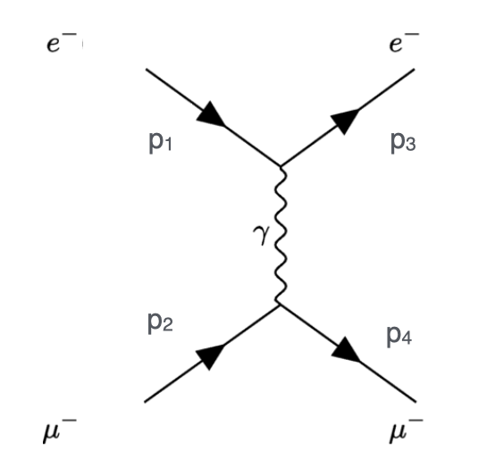
Figure 8.6: LO Feynman diagram for electron muon scattering \(e^-~\mu ^-~\rightarrow ~e^-~\mu ^-\).
We can continue as before and use trace identities to calculate \(\langle |\mathcal {M}|^2\rangle \). You
can try this as practice. Here we will avoid any new calculation for \(\langle |\mathcal {M}| ^2\rangle \) and just re-use our previous
result.
We compare the \(\mathcal {M}\) for the s-channel \(e^+e^- \rightarrow \mu ^+ \mu ^-\)
Note that we crossed both fermion lines, in one line the positron crossed to an electron and in the
other the anti-muon crossed to a muon in the initial state, so \(F=2\) and there is no overall relative minus
sign.
Now we can convert our LO \(e^+e^- \rightarrow \mu ^+ \mu ^-\)\(\sum \limits _{\mathrm {spins}} |\mathcal {M} |^2\) result
You might have heard of the eightfold way that arranged the baryons and mesons into geometrical
patterns according to the charge and strangeness based on the Gell-Mann Nishijima relation
where \(I_3\) is
the third component of isospin, \(B\) is the baryon number, \(S\) the strangeness and \(Y= B+S\) the hypercharge. The \(J=3/2\)
baryon decuplet is shown in figure 8.7.
To explain the eightfold way Gell-Mann and Zweig proposed the existence of quarks. One of the issues
of the quark model was that it was contradicting the Pauli exclusion principle. For example, the \(\Delta ^{++}\) seems to
contain three identical \(u\) quarks \(uuu\) and the \(\Omega ^{-}\) seems to contain three identical \(s\) quarks \(sss\). The solution was to
suggest that quarks not only have different flavours but also have three colours. Note that here colour
refers to a quantum mechanical degree of freedom for the quarks and has nothing to do with colours of
light.
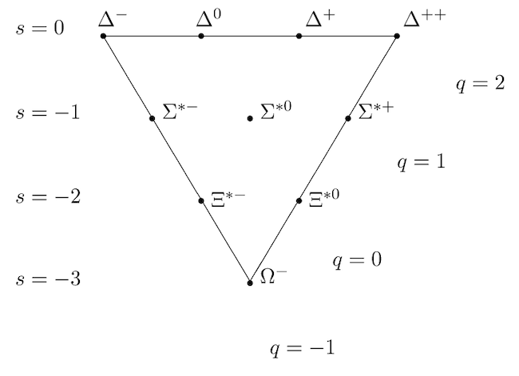
Figure 8.7: Eightfold way \(J=3/2\) baryon decuplet. Wikipedia.
One of the definitive experimental results that support the quark model is the high energy
annihilation of electrons and positrons. The process \(e^+ e^- \rightarrow q_i \bar {q}_i\), (\(q_i\) is a quark of flavour \(i=u,\ d, \ s \dots \)) is, above the threshold for
producing the relevant quarks, effectively the same as the \(e^+e^- \rightarrow \mu ^+ \mu ^-\) we discussed in 8.1. The main difference is
that the charge of the outgoing particles is not \(e\) but rather \(Q_i e\) where \(Q_i\) is the charge of the quark
in units of the elementary charge \(e\). For indistinguishable final state quarks, we will have to
add up all the cross sections for quark flavours that are kinematically allowed. And if the
colour hypothesis is correct, we need to count each quark three times (\(N_c=3\)), once for each colour.
Figure 8.8: Ratio \(R\) between the \(e^+ e^- \rightarrow \mbox {hadrons}\) and the \(e^+ e^- \rightarrow \mu ^+ \mu ^-\) cross sections as a function of the centre of mass energy [5].
In the high energy limit the effect of the strong force on the production of quarks can be neglected. Its
effect will be to “dress” the quarks (when they reach a separation distance of approximately \(10^{-15}\) m) into
bunches of hadrons. Rather than looking at the individual cross sections, we define the ratio \(R\) as
For
centre of mass values between \(1.6 < \sqrt {s} < 3.0\) GeV such as those studied by the ADONE experiment in 1969 we would
get only production of \(u\), \(d\), \(s\) flavour final states, so the value of \(R\) would be:
in the presence of quark colour. Similar behaviour is observed in the kinematic regime where \(c\) and \(b\)
quarks can be produced in the final state. Figure 8.8 clearly indicates that the factor of 3 is needed to
describe nature.
The process \(q_i \bar {q}_i \rightarrow e^+ e^- \) occurring for example in proton-proton or proton-antiproton collisions is called the
Drell-Yan process. That is the subject of one of your Homework exercises.
So far, we studied only \(2 \rightarrow 2 \) processes. “What about decays?” I hear you say. The photon cannot decay to two
electrons in the vacuum (see section 2.3). On the other hand we have covered enough material to be
able to examine the decays of the Higgs boson (which is massive) to two fermions seen in
figure 8.9.
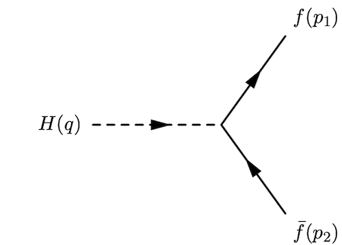
Figure 8.9: Higgs decay to fermions.
Recall that in section 7.3 we introduced the Higgs coupling to fermions. In the standard model this is
proportional to the fermion mass
where \(v\) is the Higgs field vacuum expectation value. The Higgs is a
scalar, so we do not need to add something for an incoming Higgs. We can readily write the expression
for \(\mathcal {M}\).
Here we took advantage of the fact that for a \(1 \times 1\) matrix, the complex
conjugate is the same as the Hermitian conjugate.
\begin{equation} \begin {aligned} \left [ \bar {u} v \right ]^* = \left [ \bar {u} v \right ]^\dagger = \left [ u^\dagger \gamma ^0 v \right ]^\dagger = \left [ v^\dagger \gamma ^{0 \dagger } u \right ] = \left [\bar {v} u \right ]. \end {aligned} \end{equation}
Averaging over initial particle spins is
also a non-operation since Higgs is a scalar. We still need to sum over the final leptons. We
can use the Casimir’s trick with \(\Gamma = I\) . But this is a simple enough case (no \(\gamma \) matrices from the
vertex) so we will use it as on opportunity to show how the Casimir trick arises. We have
Can we move the \(\bar {u}\) all the
way to the other side? We cannot mess with the order of two spinors, but their components
are just numbers. So, we use the following trick. A dot product of two vectors is equal to
the trace of the vectors multiplied in the opposite order to form a matrix.
We move the
barred spinor (thought of as a row vector) to the end and take the trace over the resulting \(4 \times 4\)
matrix arising from the completeness relationship for Dirac spinors.
Figure 8.10: The points show, for several particles the strength of the particle’s interaction with
the Higgs particle versus its mass (arising from its interaction with the Higgs field.) Vertical bars
show the uncertainty on the measurements. The Standard Model predicts that these points should
lie on the dashed line.
When dealing with decays, it is easier to work in the rest frame of the decaying particle
Since the Higgs couples to the fermions proportionally to their mass, the decay rate of the Higgs to
fermions is proportional to the square of their mass. This is a definite prediction for the SM Higgs
boson and one that the LHC experiments are checking following the Higgs discovery, see
figure 8.10.
Figure 8.11: Leading Order Contributions for Representative QED Processes [3] in the high energy
(\(E\gg m\)) limit.
Here I add a figure taken from [3] with some of the basic QED processes. Notice that [3] uses \(\mathcal {R}\) rather
than \(\mathcal {M}\) for the matrix element.
In this chapter we will take the first step towards completing the SM. We will start by studying weak
interactions for energies below the mass of the W (\(80.377 \pm 0.012\) GeV) and Z (\(91.1876 \pm 0.0021\) GeV) bosons. This can be seen as using
a low-energy approximation of the SM electroweak theory. There are many important processes like beta
decay, muon decay, pion decay, low-energy electron neutrino scattering, etc., that occur in this relatively
low-energy regime.
Already in the early days of quantum mechanics, a problem had appeared in the beta decay of a
radioactive nucleus. In two-body decays, the energy of the electron, in the centre-of-mass frame, is fixed
when we know the masses of the decaying particle and the two final particles. Experiments showed that
the electron energy varied considerably; only its maximum energy was the one that would be expected
from a two-body decay. Pauli suggested that a neutral particle is emitted along with the electron.
Later, Fermi presented a theory of beta decays that included Pauli’s particle. Fermi named
the particle neutrino (little neutral one), as the name neutron had already been taken in
1932.
Fermi’s original formulation for leptons was based on an interaction Lagrangian of the form
included only vector components (see section 5.4), following the same
structure as QED. Note, that I am using the particle, for example \(e, \bar {e}\), in place of \(\psi , \bar {\psi }\) to denote the
spinors.
The most important input for determining the correct answer for the proper structure
of the weak interaction came from an experiment on polarized \(^{60}\)Co decay by Wu et al. in
1957 [21]. The importance of this experiment-and subsequent ones-was the demonstration
that the charged weak interaction acts exclusively on left-handed particle chiral states and
right-handed antiparticle chiral states. Consequently, the weak interaction violates parity
symmetry.
We need to introduce the chirality projection operators in the currents. At this point you might
need to take a look at section 4.10. For left handed particle (right handed anti-particles) we
have
The above means we need to include \((1-\gamma ^5)/2\) only once to impose the desired requirement
for both spinors. The end result is that the weak currents have the form
These are called
Vector\(-\)Axial Vector, or in shorthand \(V-A\) currents. When currents of the form \(J = J_A - J_V\) are multiplied,
the products \(J_A J_A\) and \(J_V J_V\) will be unchanged under parity, but not the \(J_V J_A\) one, as can be seen from
table 5.1.
After this modification the Fermi Lagrangian takes the form
The extra factors are chosen so
that the value of \(G_F\), determined experimentally in Fermi’s original formulation, remains unchanged. An
alternative form is
The extra factors arise from the normalization of the chiral projectors \(P_L = (1-\gamma ^5)/2\), since
\(\bar {\psi }_L \gamma ^\mu \psi _L = \frac {1}{2}\bar {\psi }\gamma ^\mu (1-\gamma ^5)\psi \).
converts an neutrino to an electron (or equivalently a positron into an antineutrino), so
lowers the electric charge by one unit. \(J_l^{\rho }\) is a charged current.
Based on our discussion in section 6.6, we see that the coupling \(G_F\) has mass dimension \(\{-2\}\) and therefore the
Fermi theory is not renormalizable. Today, we understand Fermi theory as a low-energy approximation of
SM processes involving the exchange of a \(W^-\) or \(W^+\) boson.
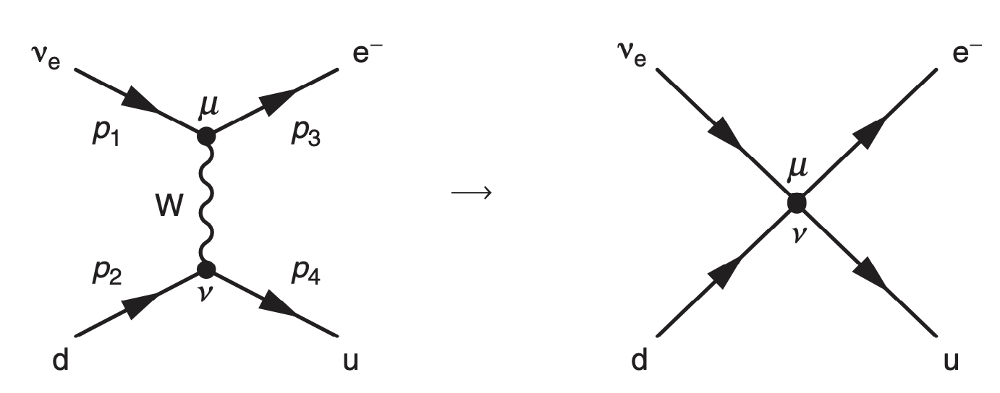
Figure 9.1: Fermi theory as the \(q^2 \ll M_W^2\) limit of the SM [5].
As we have seen, the Feynman rule for a vector boson propagator is
where \(g_W\) is the weak coupling constant. At this stage we can derive the Feynman rule of
figure 9.2.
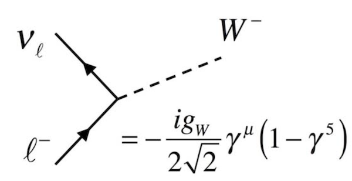
Figure 9.2: Interaction of W boson with leptons [6]; \(l\) is any charged lepton and \(\nu \) the corresponding
neutrino.
We complete the correspondence with the Fermi theory by comparing the four-fermion vertex to the
matrix element for W-boson exchange (which includes the propagator and two vertices).
By equating the effective 4-point interaction amplitude from Fermi theory with the \(W\)-boson
exchange amplitude in the low-momentum limit, we have:
We will be using this formulation, which makes the \(W\) boson explicit, in the following
sections. But keep in mind that we are still working with a low-energy approximation of the SM,
as we both ignore the W boson momentum and do not use the complete SM electroweak
theory.
Since the weak interaction couples differently to left- and right- handed particles, we can put all
left-handed fields into doublets \(L\) of particles differing by one unit of charge:
The upper member of the doublet differs by plus one unit of
electric charge relative to the lower member. Let me note that we are discussing the SM
without any extension for neutrino masses, which are covered in the neutrino part of the
course.
The \(\tau _i\) are the Pauli matrices, but I use a
different symbol to avoid confusion with ordinary spin. The doublets in 9.16 are called weak isospin
doublets.
Table 9.1: Electroweak quantum numbers for the first generation of Standard Model fermions. The
relation between \(Q\), \(T_3\), and \(Y\) is given by the Gell-Mann–Nishijima formula \(Y = 2 (Q - T_{3})\).
Fermion
\(SU(2)_L\)
\(T\)
\(T_3\)
\(Y\)
\(Q\)
Representation
Leptons
\(\nu _{eL}\)
Doublet
\(1/2\)
\(+1/2\)
\(-1\)
\(0\)
\(e^-_L\)
Doublet
\(1/2\)
\(-1/2\)
\(-1\)
\(-1\)
\(e^-_R\)
Singlet
\(0\)
\(0\)
\(-2\)
\(-1\)
Quarks
\(u_L\)
Doublet
\(1/2\)
\(+1/2\)
\(+1/3\)
\(+2/3\)
\(d_L\)
Doublet
\(1/2\)
\(-1/2\)
\(+1/3\)
\(-1/3\)
\(u_R\)
Singlet
\(0\)
\(0\)
\(+4/3\)
\(+2/3\)
\(d_R\)
Singlet
\(0\)
\(0\)
\(-2/3\)
\(-1/3\)
In order to understand the basic idea we define, in analogy with the Gell-Mann–Nishijima formula,
the weak hypercharge \(Y\):
The values of \(Q\), \(T_3\), and \(Y\) for the first generation of Standard Model fermions are
given in table 9.1. The elements of each doublet have weak isospin \(T = 1/2\). The top element of each doublet has \(T_{3} = 1/2\)
and the bottom has \(T_{3} = -1/2\). This is analogous to nuclear isospin, thus the name, but note that this is a
completely different quantum number.
All these seem, and are, very neat but also bring into focus another issue that the \(V-A\) nature of weak
interactions causes. From the onset we had to separate left- and right-handed chiral particle
states. These have to live in different representations with different quantum numbers. Adding
explicit Dirac mass terms becomes problematic. We will return to this problem later in this
course.
The quark states that participate in the weak interactions are not their mass eigenstates but are mixed
by the elements of the Cabibbo–Kobayashi–Maskawa (CKM) matrix. The rotated quark doublets
entering the weak interactions are
\begin{equation} \begin {aligned} \left ( \begin {array}{c} u \\ d' \end {array} \right )_L \ , \left ( \begin {array}{c} c \\ s' \end {array} \right )_L \ , \left ( \begin {array}{c} t \\ b' \end {array} \right )_L \ . \end {aligned} \end{equation}
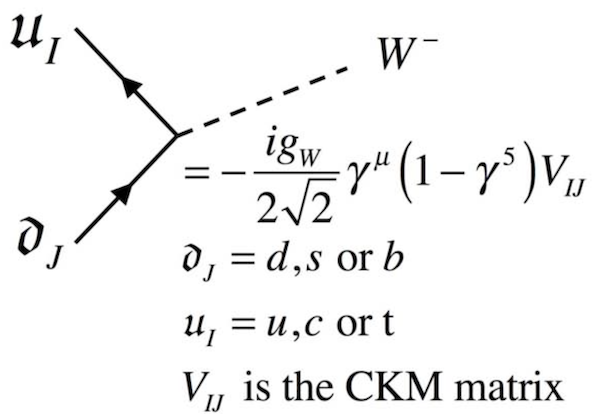
Figure 9.3: Feynman rules for W boson interactions with quarks [6].
The weak eigenstates are related to the mass eigenstates via the CKM matrix as
\begin{equation} \begin {aligned} \left ( \begin {array}{c} d' \\ s' \\ b' \end {array} \right ) = \left ( \begin {array}{ccc} V_{ud} & V_{us} & V_{ub} \\ V_{cd} & V_{cs} & V_{cb} \\ V_{td} & V_{ts} & V_{tb} \end {array} \right ) \left ( \begin {array}{c} d \\ s \\ b \end {array} \right ). \end {aligned} \end{equation}
The relevant Feynman rules are shown in figure 9.3. The CKM matrix is defined such that
the associated vertex factor corresponds to the case where the charge \(-1/3\) quark enters in the
Feynman rules as the spinor. If the charge \(-1/3\) quark enters as an adjoint spinor, the vertex factor is
\(V^*\).
In this section we will consider the process of muon neutrino scattering on an electron, \(\nu _{\mu }~e^- \rightarrow \nu _{e}~\mu ^-\), shown in
figure 9.4.
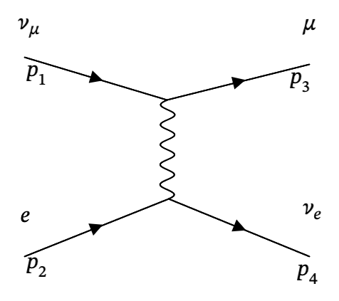
Figure 9.4: LO Feynman diagram for \(\nu _{\mu }~e^- \rightarrow \nu _{e}~\mu ^-\).
Using the rules for charged current weak interactions we derived in the previous section, we get:
to deal with the term containing the
Levi-Civita symbol twice. Terms involving the Levi-Civita symbol vanish due to it being
antisymmetric but multiplying a symmetric tensor; see Appendix A. Omitting the terms that vanish,
Remember we want the sum over final spins but average over initial spins. We have two possible spins
for the incoming electron. In the Standard Model, without extensions for neutrino mass, all neutrinos are
left-handed, and all antineutrinos are right-handed, so we have only one possible spin for the incoming
neutrino.
We want to use formula 2.26. Both incoming particles are taken to be massless, so \(|\boldsymbol {p}^*_i| = \frac {\sqrt {s}}{2}\). The outgoing
muon has mass. In the centre-of-mass frame, the momentum relationships imply
As we have seen (section 4.11), a massive left-handed chiral spinor has contributions from both
positive and negative helicity components. However, the positive helicity component is small, \(\approx m/E\), and
vanishes in the case where the mass is much smaller than the energy. For \(\nu _{\mu }~e^- \rightarrow \nu _{e}~\mu ^-\) the left-handed neutrino has
negative helicity, and the same is true for the electron. The situation is similar for the final state. As a
result, both the initial and final states have spin 0 (see figure 9.5), so that the process is an \(s\)-wave, and
therefore isotropic.
As another example we will consider the process of anti-neutrino scattering on an electron \(\bar {\nu }_{e}\ e^- \rightarrow \bar {\nu }_{\mu }\ \mu ^- \) shown in
figure 9.6.
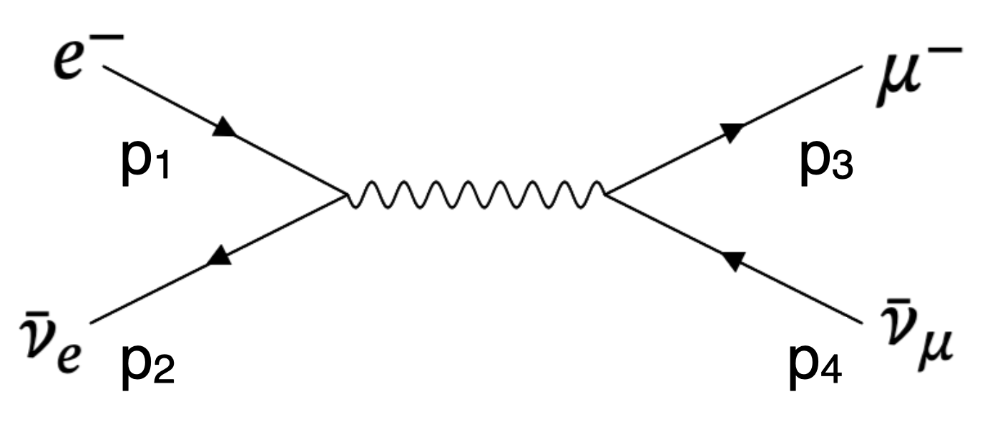
Figure 9.6: LO order Feynman diagram for \(\bar {\nu }_{e}~e^- \rightarrow \bar {\nu }_{\mu }~\mu ^- \).
Since \(s = 2p_1 \cdot p_2 = 4E^2\) and \(u = -2p_1 \cdot p_3 = - 2E^2(1+\cos {\theta })\) where \(\cos {\theta }\) is the angle
between the outgoing muon and the incoming anti-neutrino. This process is not isotropic in
the centre of mass frame. Plugging things into 2.26 we obtain
The result for the \(\bar {\nu }_{e}~e^- \rightarrow \bar {\nu }_{\mu }~\mu ^- \) can be understood from the fact that the right-handed antineutrino has positive
helicity, while the electron has negative helicity. As a result, the total spin of the initial state will be
pointing in the direction opposite to the electron 3-momentum see figure 9.7. The total spin of the final
state will be pointing opposite the muon direction. The overlap between these two spin states is
maximized when the electron and muon momenta are parallel and vanishes when the muon tries to come
out with 3-momenta opposite of the electron. As a result, the \(\bar {\nu }_{e}~e^- \rightarrow \bar {\nu }_{\mu }~\mu ^- \) in the high energy limit proceeds
entirely in a \(J = 1\) state with helicity +1; that is, only one of the three possible helicity states is
allowed.
The charged pions (\(\pi ^{\pm }\)) are spin-0 meson states formed from \(u\) and \(d\) quarks. They are the lightest mesons
(mass \(\approx 140\) MeV) and, as a result, cannot decay via the strong interaction. They decay only via the weak
interaction to final states with electrons or muons; see figure 9.8. The pion decay can be viewed as a \(2 \rightarrow 2\)
process where the quarks happen to be bound together. See figure 9.9 for what the internal structure of
the “pion blob” could look like.
Although how the quarks look inside the pion is complicated, one can still perform a quantitative
analysis of some aspects of hadronic weak decays. We know how the \(W\) couples to fermions. We can write
the amplitude as
We only use the fact that we have four fermions, a \(W\) boson propagator (\(M_W \gg p\) approximation), and that the
quarks are \(\bar {u}, d\). The \(F_\pi \) is a form factor which describes the pion blob. We know that \(F_\mu \) is a four-vector, as it has
to contract with the four-vector from the lepton part. Since the pion has spin 0, the only vector
associated with it is its four-momentum \(p\). We effectively end up in the situation shown in
figure 9.10.
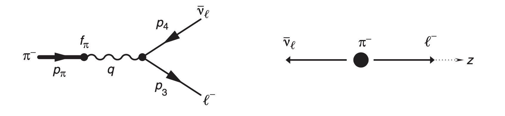
Figure 9.10: Feynman diagram for charged pion decay [5].
The \(F_\mu \) will be a scalar quantity times the momentum of the pion \(p\),
\(f_{\pi }\) is called the pion decay
constant and is a function of \(p_\mu ^2\). Since the pion is on mass shell, \(p^2 = m_\pi ^2\), which for our purposes is a fixed
number.
We have parametrised our ignorance of the pion bound-state properties. In principle, we could
compute \(f_\pi \) if we had perfect control over the strong interactions inside the pion. In practice, it is an
experimentally measured quantity.
We cannot ignore the mass of the lepton as, at least in the case of the muon, it is significant with
respect to the pion mass. We nee to form \(p \cdot p_3\) and \(p \cdot p_4\). Since \(p = p_3 + p_4\) we obtain by squaring
This is a definite prediction of the theory, as \(f_\pi \) cancels out, so it
depends only on the masses of the relevant particles. This prediction has been experimentally
verified.
The strength of the weak interaction for the different lepton generations is the same. In this basis, it
would be expected that the matrix elements for the decays to electrons and muons would be similar.
Actually, for a two body decay, phase-space considerations should favour the decay to the lighter lepton.
Charged pion decay is a good example of the \(V-A\) nature of the weak interaction and the difference between
chirality and helicity. The anti-neutrino is right-handed and has positive helicity. The pion has spin 0, so
the charged lepton has to be emitted with opposite spin, so it also has positive helicity; see
figure 9.11.
Since weak interactions couple only to left-handed chiral particles, if helicity and chirality
coincided, the decay of charged pions to leptons would be forbidden. Actually, as we have
mentioned, a left-handed chiral spinor has contributions from both positive and negative helicity
components. However, the positive helicity component is typically small, \(\simeq m/E\). The dependence \(\simeq m/E\) for
the “wrong” helicity component explains why the decay to muons is favoured over that to
electrons.
The development of the theory ideas relevant to the Electroweak theory can be summarised as follows:
1954: Yang and Mills proposed a generalization of gauge invariance to non-Abelian groups,
specifically \(SU(2)\), introducing the concept of self-interacting gauge fields.
1961: Glashow suggested \(SU(2)\times U(1)\) as capable of unifying electromagnetic and weak interactions. The
weak bosons remained massless in order to preserve gauge invariance.
1964: Higgs, Englert, Brout, Guralnik, Hagen, and Kibble demonstrated that a scalar field \(\phi \) with
potential
could generate masses for gauge bosons while preserving gauge invariance in the
underlying Lagrangian.
1967–1968: Weinberg and Salam applied the Higgs mechanism to the \(SU(2)_L \times U(1)_Y\) model, successfully
generating masses for the \(W^\pm \) and \(Z^0\) bosons, as well as for charged leptons.
1971–1972: Hooft and Veltman proved that non-Abelian gauge theories are renormalizable.
This chapter introduces the weak currents mediated by the Z boson, and the phenomenology of
electroweak interactions. In the next chapters we we will cover the Higgs mechanism and non-Abelian
gauge theories.
If we want to follow the analogy with the Gell-Mann–Nishijima formula, we have three quantum
numbers: electric charge \(Q\), weak hypercharge \(Y\), and weak isospin \(T\) (with components \(T_3\)) that are connected
via
The \(J_Y^\mu \) current involves both left- and right-handed fermions, since both the left-handed doublet and the
right-handed singlet carry non zero hypercharge. This is a key ingredient on being able to unify
electromagnetism with weak interactions. Let’s write it for the first generation of leptons as:
The \(\epsilon ^{abc} W_\mu ^b W_\nu ^c\) term appears because \(SU(2)_L\) is a non-Abelian gauge symmetry, implying that the
weak gauge bosons can interact with one another; see section 6.5. The \(U(1)_Y\) field-strength tensor has the same
form as in electromagnetism since \(U(1)\) is Abelian.
The interaction terms may be written more compactly by introducing the covariant derivative,
\begin{equation} \begin {aligned} D_\mu = \partial _\mu - i g \frac {\tau _a}{2} W_\mu ^{(a)} - i g^\prime \frac {Y}{2} B_\mu . \end {aligned} \end{equation}
At this point it seems that, at the cost of adding, for \(Y\), a gauge field \(B^\mu \) on top of the \(W^{(1,2,3)}\), we can create a
unified electroweak theory. In the above Lagrangian The \(W_\mu ^\alpha = W^{(1,2,3)}\), \(B_\mu \), and the fermions are massless. Adding terms
for those will break local gauge invariance. We need a way to obtain the physical \(W^\pm \) and \(Z^0\) bosons. This will
be the subject of the next chapters.
The first major step for the experimental verification of the Electroweak model came from the Gargamelle
collaboration that observed weak neutral currents in July 1973; see figure 10.1.
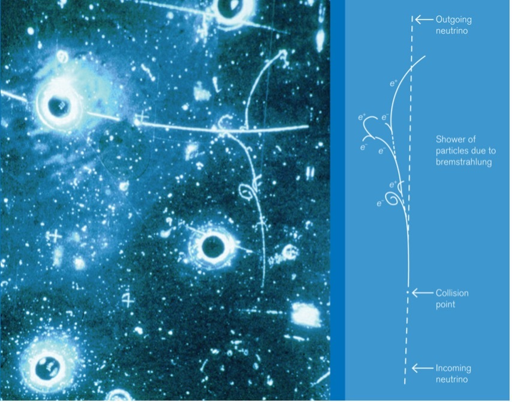
Figure 10.1: The first observation of a single-electron neutral-current event, \(\nu _{\mu } + e^- \rightarrow \nu _{\mu } + e^- \) An incoming
neutrino, invisible in the detector, interacts with an electron and produces a visible electron track.
Source: CERN.
In the model of electroweak unification, the neutral \(W^3\) field mixes with the \(B^\mu \) field to give the physical
photon and Z boson fields:
Here we introduced the \(B_\mu \) and Z boson couplings \(g^\prime \) and \(g_Z\), on top of the EM
coupling constant \(e\) and the weak coupling constant \(g_W\).
The \(\epsilon ^{\mu \nu \kappa \sigma }\) term gives zero since it is an antisymmetric term
multiplied with symmetric ones, we have the symmetric \(g_{\mu \nu }\) and the symmetric \(p_{1\mu } p_{1\nu }\) = \(p_{1\nu } p_{1\mu }\). Therefore,
In the centre of mass frame \(|\mathbf {p*}| = |\mathbf {p_3}| = |\mathbf {p_2}|\), since the fermions are take to be massless implies \(|\mathbf {p*}| =E_2 = E_3 = \frac {M_X}{2}\). Since, \(\int d\Omega = 4 \pi \) equation
2.18 gives
We can calculate the decay rates of the \(Z\) boson by using equation 10.34. For \(\sin ^2 \theta _W = 0.23146\) we have \(g_Z \approx 0.55\). The decay rate to
each particle type depends on the values of \(c_V\) and \(c_A\)
This means that the \(Z\) couples equally to the three neutrino
families and the three charged lepton families. The \(Z\) boson decays to only two up-type quarks, since the
decay into \(t \bar {t}\) is not allowed by kinematics, and the three bottom type quarks. Each quark type has three
colour states, hence a further factor of 3.
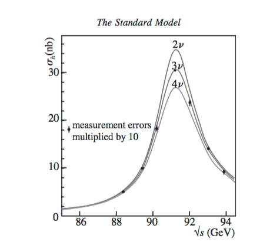
Figure 10.4: \(e^+e^-\) cross-section as a function of the centre-of-mass energy. The experimental data are
compared to models with 2, 3 and 4 different neutrino families.
The total width of the \(Z\) boson depends on the number and type of particles, with mass
smaller than \(M_Z/2\), the \(Z\) decays to. A detailed study of the \(Z\) width can be used to calculate the
number of neutrino families by comparing the cross-section of \(e^+ e^-\) collisions as a function of
the centre-of-mass energy with experimental data as shown in Fig 10.4. The result of the
comparison shows that the \(Z\) decays into 3 different neutrino families, which means that if an
additional neutrino exists its mass has to be larger than \(M_Z/2\) or it does not have standard weak
interactions.
Equation 10.35 can be used to calculate the branching ratios of the \(Z\) boson into its various decay
modes. When taking the ratio
The decay rates of the W boson follow from 10.34 with \(g_X = g_W/\sqrt {2}\) and \(c_A = c_V = 1\). For the leptons, since we ignored the
lepton mass differences we write:
The decays into quarks are more complex. There is a factor of three
due to the colour terms. But also, the electroweak quark states do not correspond to the strong quark
states, but they are mixed with the CKM matrix. So we get:
Therefore the total width of the \(W\) boson will be \((6+3) = 9\) times the width to \(e^- \bar {\nu }_e\) and the branching ratio of
the \(W\) into hadrons is \(6/9 = 2/3 \approx 67 \%\).
Gauge invariance is one of the principles of the Standard Model. Moreover, gauge theories were shown
to be renormalizable by ’t Hooft and Veltman in the early 1970s.
On the other hand, weak interactions seem not to be compatible with gauge invariance. Mass terms, \(\frac {1}{2} m_Z^2 Z^{\mu } Z_{\mu }\),
for the gauge bosons break gauge invariance, and the same issue affects fermion mass terms since the left-
and right-handed fermions belong to different representations.
A solution to this problem was discovered in the 1960s by Brout, Englert, Higgs, Guralnik, Kibble,
Anderson, and others, starting from ideas first developed in condensed matter physics. Their solution was
incorporated by Weinberg and Salam in their formulation of the electroweak theory and today is one of
the cornerstones of the Standard Model.
In this section we will develop the main ideas in the context of Abelian theories like QED. In the next
chapter we will expand our treatment to non-Abelian theories, completing our description of the
SM.
We can separate two cases. If \(\lambda > 0\) and \(\mu ^2 > 0\), there is an overall minimum of \(V(\phi )\) at \( \phi _1 = \phi _2 = 0\). The fields have masses equal
to \(\sqrt {\mu ^2}\), and interact via vertices involving four fields with coupling constant proportional to
\( \lambda \).
If \( \lambda > 0\) and \(\mu ^2 < 0\), then the configuration is unstable; the mass term has the “wrong sign” (imaginary). In this
case the true vacuum is no longer at \(\phi = 0\): we obtain the Mexican-hat potential, see Figure 11.1, with a
degenerate circle of minima in the \(\phi _1 - \phi _2\) plane.
Without loss of generality, we give a
non-zero vacuum expectation value to the \(\phi _1\) direction: \(\langle 0|\phi _1|0\rangle = v\), meaning \(\langle 0|\phi |0\rangle = v/\sqrt {2}\).
We want to understand the content of the theory after spontaneous symmetry breaking. This can be
achieved by expanding the Lagrangian around the minimum:
We can identify a mass term \(\mu ^2 \xi ^2 = - \frac {1}{2} m_\xi ^2 \xi ^2\) with \(m_\xi = \sqrt {-2 \mu ^2}\); recall \(\mu ^2 < 0\). The cubic terms
proportional to \(\mu ^2/v\) correspond to \(\xi \xi \xi \) and \( \xi \eta \eta \) interaction vertices, while the quartic terms proportional to \(\mu ^2/v^2\)
correspond to \(\xi \xi \xi \xi \), \( \xi \xi \eta \eta \), and \(\eta \eta \eta \eta \) interaction vertices.
We started with a complex field possessing \(U(1)\) symmetry, representing two physical degrees of freedom.
After spontaneous symmetry breaking, we have two scalar bosons, so again two degrees of freedom as
there should be. We have a massive \(\xi \) scalar boson along the direction we broke the symmetry, and we also
have a massless scalar particle \(\eta \).
The breaking of a continuous internal global symmetry implies the existence of massless scalar
particles. This is Goldstone’s theorem and the massless particles are known as Goldstone
bosons. There is one Goldstone boson for each broken internal symmetry generator. But
there is a further twist in the story: the Goldstone boson can be “evaded” [22] in a gauge
theory.
There is a mass term for the \(A_\mu \) field: \(\frac {1}{2} Q^2 e^2 v^2 A^\mu A_\mu = \frac {1}{2} M_A^2 A^\mu A_\mu \).
We still have a scalar particle \(\xi \) with mass \(m_\xi = \sqrt {-2 \mu ^2}\).
Let’s count physical degrees of freedom. Before spontaneous symmetry breaking we have two
polarization states for the massless \(A^\mu \) field. There are in addition two scalar fields (or a single complex
one). So we have four degrees of freedom. After spontaneous symmetry breaking we have a massive scalar
boson \(\xi \), and the \(A^\mu \) field is now massive, so it should acquire an additional longitudinal polarization degree
of freedom. If we also count the Goldstone boson \(\eta \) as a separate physical degree of freedom we end up
with five degrees of freedom, one too many. The same problem can be seen in the form of the \(Qe v A^\mu \partial _\mu \eta \) term, as it
is a bilinear term mixing two different fields, implying there is a vertex that turns the one field into the
other.
The solution is that the Goldstone scalar field \(\eta \) is a “spurious” field which can be gauged away. We
note that
and all \(\eta \)
terms disappear from the Lagrangian.
This choice of gauge, for which only the physical particles remain in the Lagrangian is called the
unitary gauge. In this gauge let’s rename the physical Higgs field to \(h\) and the gauge field to
\(V_\mu \).
After gauging away \(\eta \), the field strength remains invariant:
From this Lagrangian, we can “read-off” the propagators and the interaction vertices of the theory
in the unitary gauge. The propagators for the Higgs scalar \(h\) and the massive vector \(V_\mu \) are:
The Lagrangians 11.13 and 11.22 describe exactly the same physical system; all we have done is to
select a convenient gauge and rewrite the fields in terms of fluctuations about a particular ground state.
We have sacrificed the manifest symmetry of 11.13 in favour of a notation that “hides” the symmetry but
makes the physical content more transparent, and allows us to extract the Feynman rules more
directly.
QED is an Abelian theory based on \(U(1)\) gauge invariance. In 1954 Yang and Mills extended
the concept of gauge invariance to theories with \(SU(N)\) symmetry, where the underlying group
is non-Abelian. Their motivation was the \(SU(2)\) isospin symmetry between the proton and the
neutron.
Gauge theories require massless, interaction-carrying vector bosons. No such particles were known at
that time. Considerable effort was therefore devoted to constructing theories with massive vector
bosons. When these efforts eventually bore fruit, in the form of what is today known as the
“Higgs” mechanism, it was already clear that the proton and the neutron were not elementary
particles.
Nevertheless, non-Abelian gauge theories eventually found important applications in the context of
the \(SU(3)\) colour symmetry of QCD and the \(SU(2)_L \times U(1)_Y\) symmetry of the electroweak theory. As a result,
these ideas now play a fundamental role in the formulation of the Standard Model of particle
physics.
In what follows, I will use a notation where Roman subscripts/superscripts near the middle of the
alphabet \((i,j,k\dots )\) run from 1 to 3, denoting the three colour indices:
Notice that \(\psi \) above is a three-component
column vector in colour space whose entries are 4-component Dirac spinors. The \(\gamma ^\mu \) acts on the
four components of the individual spinors. Namely if we include explicit spinor indices \(p\), \(q\)
We would like to generalize the same gauge invariance principle employed for QED, but with the \(U(1)\)
gauge group replaced by the \(SU(3)_c\) group of phase transformations on the quark colour fields. For \(U(1)\) in QED, we
had
\begin{equation} \begin {aligned} U = e^{iQ\theta (x)}. \end {aligned} \end{equation}
where \(U\) is a unitary
matrix. An \(SU(N)\) group has \(N^2 - 1\) generators \(t^a\) which are traceless Hermitian matrices. Therefore, for \(SU(3)_c\):
The unitary matrix \(U\) acts on the colour indices \((i,j)\), while the Dirac matrix \(\gamma ^0\) acts on the spinor indices \((p,q)\).
Because these are independent indices, we can rearrange the components:
However, if \(U\) is a function of \(x\), a term proportional to \(\partial U\) will spoil the local invariance. To construct
a gauge-invariant Lagrangian, we introduce eight gauge fields \(G_\mu ^a\), one for each generator—to
compensate for the phase differences. These are the 8 gluons. We now construct the covariant
derivative:
where \(t^{a}_{ij}\) is the \(ij\) element of the matrix \(t^a\). Note that the \(g_s\) and \(t^{a}\) play the roles of the QED \(e\) and
\(Q\) respectively. Recall that the covariant derivative has to transform the same way as the \(\psi \)
As a matter of notation notice that we took the \(\partial _\mu \), \(D_\mu \), \(G^\mu \) and \(G_{\mu \nu }\) to act on the fields in 12.2, meaning
that there is always a \(3 \times 3\)\(t^a\) matrix, with the relevant \(t_{ij}\) elements, on the right-hand side of their
definitions.
where \(i,j\) run over the colour indices, \(A,B\) run over the quark
flavours \(u,d,s,c,b,t\) and \(t_a\) are the generators of \(SU(3)_c\). This Lagrangian contains a gluon-quark interaction term
analogous to QED:
The term \(G^{\mu \nu }_a G^a_{\mu \nu }\) has a
remarkable new property. It contains not only the standard kinetic term of the gauge fields,
but also an interaction vertex with three gauge bosons proportional to \(g_s\), and a vertex with
four gauge bosons proportional to \(g_s^2\). These extra terms do not have QED analogues and are
unique to Yang-Mills theories. In the context of QCD they correspond to three and four gluon
vertices.
We start from a model that has two kinds of fields. There are the matter fields, that is, the three
generations of left-handed and right-handed chiral quarks and leptons. As we have seen the
left-handed fields are arranged in weak doublets while the right-handed ones are arranged in
singlets.
Then there are the gauge fields corresponding to the spin-one bosons that mediate
the interactions. We have the weak hypercharge field \(B_\mu \) which corresponds to the generator \(Y\)
of the \(U(1)_Y\) group and the three fields \(W_\mu ^1 \ , W_\mu ^2 \ , W_\mu ^3\) which correspond to the generators \(T_i = \frac {1}{2} \tau _i\) of the weak isospin
group.
The doublet has weak isospin \(T=1/2\) and hypercharge \(Y = 1\) leading
to the usual electromagnetic charges +1,0, for the \(\pm 1/2\) upper and lower members of the doublet.
We then proceed, as before, to write a Lagrangian
The neutral component of the doublet field \(\Phi \) will develop a vacuum expectation value (vev) at the
minimum. The vev should not be in the charged direction to preserve \(U(1)_{\mathrm {QED}}\). We shall choose the vev’s of the
fields \(\phi _1\), \(\phi _2\) and \(\phi _4\) to be zero, while
We should be able to pick the vacuum direction completely arbitrarily, but
in order for the photon to remain massless after the spontaneous symmetry breaking, we need to give
a non-zero vev to a neutral field. To do things generally one can assign charges and other
quantum numbers after performing the symmetry breaking. We will continue with a particular
choice.
We now, as in the previous chapter, expand \(\Phi \) around this chosen vacuum, setting \(\phi _3 = H + v\), where \(H\)
is the neutral scalar Higgs field. We will work directly in the unitary gauge in which case
we can write
The Higgs Boson
Turning our attention to the Higgs boson itself. The kinetic part of the Higgs field, \(\frac {1}{2}(\partial _\mu )^2\) comes from the
term involving the covariant derivative as seen above. The mass and self-interaction parts, come from the
scalar potential
From this Lagrangian one can
simply read the Higgs boson mass as \(M_H^2 = 2 \lambda v^2 = - 2 \mu ^2 \). We also see that the Higgs boson has triple and quartic
self-couplings.
We can again count the degrees of freedom before and after spontaneous symmetry breaking. Before
spontaneous symmetry breaking we have 12 degrees of freedom: four degrees of freedom from the
complex scalar doublet \(\phi \), two degrees of freedom from the massless \(B\) field (\(U(1)\) gauge boson), and
six degrees of freedom from the three massless \(W^i\) bosons (\(SU(2)\) gauge bosons). After spontaneous
symmetry breaking, we also have 12 degrees of freedom: one from the massive real scalar \(h\) (the
Higgs boson), nine from the three massive vector bosons (\(W^\pm \) and \(Z\)) and two from the massless
photon.
Fermion Masses
We can also generate the fermion masses using the same scalar field \(\Phi \) with hypercharge \(Y=1\).
Most of the theoretical concepts in the Standard Model were in place by the end of the 1960s. These
ideas gained strong support with the discovery of the W and Z bosons at CERN in the mid
1980s. In the last decade of the twentieth century, precision studies of the W and Z bosons
provided stringent tests of the Standard Model predictions. The discovery of the Higgs boson by
the ATLAS and CMS collaborations in 2012 completed the particle content of the Standard
Model.
It is hard to believe that the Standard Model is the final theory of particle physics. It is a
framework constructed from a number of beautiful and profound ideas, put together in a
somewhat ad hoc fashion, and supported by a wide body of experimental results that guided its
construction.
Precision tests of the Standard Model and the discovery of the Higgs boson have firmly established its
validity at energies up to the electroweak scale. Despite this success, many questions remain unanswered.
We may be standing at the threshold of new and potentially revolutionary discoveries. This could be the
direct detection of dark matter, an understanding of the nature of neutrino mass, the observation of
deviations from Standard Model predictions at the LHC or quite possibly something completely
unexpected.
A tensor is a geometric object defined in spacetime, whose components carry indices and transform
appropriately under a change of reference frame. One of the difficulties in working with tensors and index
notation is that we are often used to particular coordinate systems, so we sometimes overlook actual
geometric properties. I will adopt a practical approach. Meaning that I will avoid certain mathematical
terms and formal definitions.
A point represents a physical location in space, such as a specific spot in this room. Coordinates are
simply labels assigned to that point when we describe its position within a coordinate system. Different
coordinate systems can be used to describe the same point. Importantly, the point itself does not change
when we change coordinates; only its labels do.
Suppose a point \(P\) is described by coordinates \(x\) in one coordinate system and by \(x'\) in another. If we
define a scalar function on space, its value at the point \(P\) must remain the same regardless of the
coordinate system used. Thus
Here \(\Phi (x)\) and \(\Phi '(x')\) represent the same function written in two different coordinate systems. As an example,
suppose the function in the original coordinates is
A vector is commonly described as an object possessing both a magnitude (length) and a direction. It is
important to distinguish between a vector and its components. The vector\(v\) is an object that is completely
independent of any coordinate system.
To describe a vector we introduce a basis. In a coordinate system \(x = (x^1,x^2,\ldots ,x^n)\) we denote the basis vectors by \(e_i\).
Any vector \(v\) can then be written as
where the \(v^i\) are the components of \(v\). The components depend on
the coordinate system. On the other hand, the vector as a geometrical object it does not
depend on the coordinate system, only its components do. Put otherwise, coordinates are
simply labels assigned to points in space; changing coordinates should not alter geometric
properties.
In the same spirit, coordinate transformations cannot change the meaning of geometric operations
such as inner products or directional derivatives. For instance, the dot product of two vectors or the
directional derivative of a function produces a scalar. Scalars are coordinate-independent, meaning their
value at a point does not depend on the coordinates assigned to that point. Consider two vectors \(u\) and \(v\).
In a coordinate system the dot product is
In special relativity, the quantity \(g_{\mu \nu } a^{\mu } a^{\nu }\) is invariant. Here \(a^{\mu } = (a^0, a^1, a^2, a^3)\) is a four-vector. The metric tensor is
gives a scalar with a different physical meaning. In particle physics, indices
often track the flow of momentum along lines in a Feynman diagram or other conserved
quantities. Therefore, pairing the wrong vectors does not correspond to the intended physical
process.
Non-zero terms require \(\{\lambda ,\sigma \} = \{\kappa ,\tau \}\) otherwise one of the indices that differ would coincide with one of
the \(\{\mu ,\nu \}\) and the product would vanish. As an example we can look at the case: \(\lambda = 2\), \(\sigma = 3\)
The above can be repeated for the other cases \(\{\lambda , \sigma \} = \{0,1\}, \{0,2\} ,\{0,3\}, \{1,2\}, \{1,3\} \{2,3\}\),
leading to the same result that can be written in terms of Kronecker deltas:
Let’s consider a decay process where the initial state is a single particle with four-momentum \(p\) and mass \(M\),
and the final state is given by \(n\) particles with four-momenta \(p_i\) and masses \(m_i\), \(i=1, \dots ,n\). For brevity, we define \(T_{fi}\) as:
Step 1: Square Modulus
The term \(\delta _{fi}\) is 0 since the initial and final states are different. Quantum mechanics requires that the
probability for a process is given by the square of the modulus:
Step 2: Sum over all final states
To get the correct probability we need to sum over the possible values of the final particles’ momenta.
In the large volume limit, we can write:
In order to understand this point in a bit more “physical” manner, notice that in classical mechanics
we use momentum and position phase-space. Classical energy can be connected to quantum mechanics
via the number of quantum states per area of phase space energy. The usual integration measure is
where \(h^3\) is the volume of the cells of phase space.
This can be interpreted as follows. Phase space is not infinitely continuous but is divided into discrete
cells. A cell of volume \(h^3\) corresponds to exactly one quantum state, so the density of states in phase space
is \(h^{-3}\). Since \(h = 2\pi \hbar \) and we work in units where \(\hbar = 1\), the phase-space measure becomes
We consider momentum
eigenstates, so the result depends on momentum but not on position. Consequently, integrating over \(d^3\mathbf {x}_i\)
simply yields the spatial volume \(V\).
Step 3 Bring things together:
Therefore, the probability \(dw\) for having in the final state the i\(^\mathrm {th}\) particle with momentum between \(p_i\) and \(p_i+dp_i\) is
What about all these factors of \(2\pi \) we encountered? You can keep track of them using the following rule:
Every \(\delta \) gets (\(2\pi \)); every \(d\) gets \(1/2\pi \).
Consider the two-body decay \(a \to 1+2\). In the centre-of-mass frame, the decaying particle is at rest, \(E_a = m_a\) and \(\mathbf {p}_a = 0\), and the
two daughter particles are produced back-to-back with three- momenta \(\mathbf {p}^*\) and \(-\mathbf {p}^*\). In this frame, the decay
rate is given by
The \(\delta ^{(3)}(\mathbf {p}_1 + \mathbf {p}_2)\) term enforces momentum conservation, so that integrating over \(d^3 \mathbf {p}_2\) gives \(\mathbf {p}_2 = -\mathbf {p}_1\), reducing the decay rate
to
The delta function \(\delta (f(p_1))\) is only non-zero for \(p_1 = p^*\), where \(p^*\) is
the solution of \(f(p^*)=0\). Using the following property of the Dirac delta function,
where \(\rho \)
is the local charge density and \(\boldsymbol {J}\) is the current density.
These equations can be rewritten in a manifestly Lorentz invariant form, using the following
procedure. We take \(\frac {\partial }{\partial t}\) of the first equation and the \(\boldsymbol {\nabla }\) of the second equation and add them together.
Since the divergence of a curl is zero (\(\boldsymbol {\nabla } \cdot (\boldsymbol {\nabla } \times \boldsymbol {A})=0\)) and we can exchange the order of \(\frac {\partial }{\partial t}\) and \(\boldsymbol {\nabla }\) (Schwarz’s
theorem), we obtain the local conservation of charge:
The scalar potential \(A^0\)
represents the energy per unit charge locally available, while the vector potential \(\boldsymbol {A}\) represents the
momentum per unit charge locally available for exchange between charged matter and the
field.
We can assemble the potentials in a four-vector \(A^\mu = (A^0, \boldsymbol {A})\) and use that to define the antisymmetric field
strength tensor
Figure C.1: Diagram of a two-slit electron diffraction experiment demonstrating the
Aharonov–Bohm effect [23].
The Aharonov–Bohm effect is about examining the two-slit electron experiment in the presence of
a solenoid; see figure C.1. With no current in the solenoid, electrons form an interference
pattern on the screen. As soon as current flows through the solenoid, the diffraction pattern
changes.
The probability amplitude \(\psi _1\) for an electron to follow path 1 and the amplitude \(\psi _2\) for path 2 are
modified:
For an infinitely long thin solenoid, there is no magnetic field \(B\) outside. The experimentally observed
modification of the interference pattern is therefore due to the vector potential \(A\), present outside the
solenoid.
The vector potential \(\mathbf {A}\) is related to the space-dependent phase and the scalar potential \(\phi \) to the
time-dependent phase. From the phase of the probability amplitude, one can obtain the 4-vector
potential, and vice versa.
Classically, \(\mathbf {B}\) is considered the fundamental quantity and \(A\) is seen more as a mathematical
curiosity. This is not true at the quantum level, where \(\mathbf {A}\) can have an effect in the absence of \(\mathbf {B}\). The
Standard Model is formulated in terms of gauge fields (like \(A^\mu \)) rather than force fields (like \(\mathbf {B}\) and
\(\mathbf {E}\)).
Unlike the Maxwell case, the Proca Lagrangian is not invariant under gauge transformations. The
mass term breaks gauge invariance and leads to three physical degrees of freedom, corresponding to a
massive spin-1 particle.
Since \([\hat {H}_D, \hat {\mathbf {L}}] \neq 0\), the orbital angular momentum \(\hat {\mathbf {L}}\) is not a conserved quantity
for a Dirac particle.
Now, consider the spin operator \(\hat {\mathbf {S}} = \frac {1}{2} \hat {\boldsymbol {\Sigma }}\), where \(\hat {\boldsymbol {\Sigma }}\) is the \(4 \times 4\) version of the Pauli matrices:
the Dirac theory predicts
a value \(g=2\). While the Dirac equation predicts \(g=2\), radiative corrections-higher-order Feynman
diagrams-account for the small but measurable deviation known as the anomalous magnetic moment
\(g-2\).
When evaluating contractions, the objective is to move the leading \(\gamma ^\mu \) to the right until it is
adjacent to its contraction partner \(\gamma _\mu \). Each “jump over” generates a metric tensor term and a sign
change.
Contraction of four matrices
For longer chains, we repeatedly apply the “jump over” method. Move the leading \(\gamma ^\mu \) to the right over \(\gamma ^\nu \)
and apply the 3-matrix contraction result:
We begin by defining the quantity \(G\), which typically represents the square of the transition amplitude.
Given two \(4 \times 4\) matrices \(\Gamma _1\) and \(\Gamma _2\):
Since the term in the second set of brackets is a scalar (\(1 \times 1\) matrix), its complex
conjugate its the same as its Hermitian conjugate. Using the identities \((\gamma ^0)^\dagger = \gamma ^0\) and \((\gamma ^0)^2 = 1\):
Existence of an Identity: There is a unique element \(I = g_1\) of the group such that for all \(g_i\) in \(G\), \(I \cdot g_i = g_i \cdot I = g_i\).
Inversion: For each \(g_i\), there is a unique inverse element \((g_i)^{-1}\) satisfying \((g_i)^{-1} \cdot g_i = g_i \cdot (g_i)^{-1} = I\).
Groups may be Abelian or non-Abelian according to whether the result of the binary operation
depends upon the order in which the input elements are used: if \(g_i \cdot g_j = g_j \cdot g_i\) the group is Abelian, otherwise it is
non-Abelian.
In physics, we are interested in the action of group elements on physical states. Thus, we focus more on
representations rather than the groups themselves. A representation is the association of group elements
with \(N \times N\) matrices acting on \(N\)-dimensional complex vectors, denoted by \(\mathcal {D}\):
Here, the \(\cdot \) symbol in the top row
denotes the multiplication of two group elements, while in the bottom row it denotes multiplication of
two matrices.
If, for an arbitrary element \(a\), the matrix \(\mathcal {D}(a)\) can be diagonalized to the block form
To connect the abstract group elements with a representation, consider a simple finite example: the
group of permutations of four objects, \(S_4\). For instance, the permutation \((2413)\) acts as
Lie groups are groups with an infinite number of elements that can be smoothly parametrized by one
or more continuous parameters. Since the identity is an important element of the group, it
is useful to parametrize elements such that \(\theta ^a = 0\) corresponds to the identity element. In some
neighbourhood of the identity, group elements can be written as \(g(\theta )\), where \(\theta ^a, \, a = 1, \dots , N,\) are real parameters, and
\begin{equation} g(\theta )\big |_{\theta =0} = I. \end{equation}
If we consider a representation of the group, the corresponding linear operators are parametrized in
the same way:
In a neighbourhood of the identity, we can Taylor expand \(\mathcal {D}(\theta )\). For infinitesimal parameters \(\theta ^a\),
we keep only the leading term:
We can move away from the identity in a fixed direction by exponentiating an infinitesimal
transformation. Using the group property, we define finite transformations as
This defines a particular
parametrization (the exponential parametrization) of the representation. Group elements (at least near
the identity) can be written in terms of the generators. This is useful because, unlike “abstract”
group elements, the generators form a vector space: they can be added and multiplied by real
numbers. Along a single direction in parameter space,
\begin{equation} \mathcal {D}(\alpha ) = \exp (i \alpha T^a), \end{equation}
However, if we consider two different directions, the situation is more complicated as
\begin{equation} \exp (i \alpha T^a)\, \exp (i \beta T^b) \neq \exp \big (i(\alpha T^a + \beta T^b)\big ). \end{equation}
On the other
hand, exponentials are a representation of the group (at least near the identity), so their product must
still be expressible as an exponential:
\begin{equation} \exp (i \alpha T^a)\, \exp (i \beta T^b) = \exp \big (i \gamma ^c T^c\big ), \end{equation}
for some parameters \(\gamma ^c\). Because the group is smooth, we can expand
both sides in \(\alpha \) and \(\beta \). Using the Baker-Campbell-Hausdorff (BCH) formula,
\begin{equation} \exp (i \alpha ^a T^a)\exp (i \beta ^b T^b) = \exp \Big (i \alpha ^a T^a + i \beta ^b T^b - \tfrac {1}{2} \alpha ^a \beta ^b [T^a,T^b] + \cdots \Big ), \end{equation}
where repeated indices \(a,b\) are
summed over. Comparing with
\begin{equation} \exp \big (i \gamma ^c T^c\big ) = \exp \Big (i \gamma ^c T^c + \cdots \Big ), \end{equation}
and matching the \(O(\alpha \beta )\) terms gives:
\begin{equation} [T^a,T^b] = i f^{abc} T^c. \label {eq:Lie_algebra} \end{equation}
The parameters \(f^{abc}\) are called
structure constants. The commutator above defines the Lie algebra corresponding to the Lie
group. For Abelian groups \(f^{abc} = 0\). For non-Abelian groups, in practice we pick a particular set
of matrices \(T^a\) as the defining or fundamental representation; this fixes the structure of the
algebra.
A couple of examples relevant to particle physics can help clarify the above abstract terminology.
U(1)
The simplest Lie group is the Abelian \(U(1)\) group. The elements of the \(U(1)\) group are points on the unit circle,
which can be labelled by a unit complex number \(e^{i\theta }\). Since complex numbers \(e^{i\theta }\) are \(1\times 1\) unitary matrices, \(U(1)\) is also
the group of unitary matrices of dimension \(1\). The representations of \(U(1)\), used in physics, are \(U = e^{i Q \theta }\) with \(Q\) an
integer. Here, \(\theta \) labels the group elements, and the charge \(Q\) labels the representation of the
group.
SU(N)\(SU(N)\) is the Lie group of \(N\times N\) unitary matrices with determinant 1. We define the representation
\begin{equation*} U = e^{i\theta T}. \end{equation*}
The unitary
requirement \(UU^\dagger = 1\) implies
\begin{equation*} U^\dagger U = I \implies e^{-i\theta T^\dagger } e^{i\theta T} = I \implies e^{-i\theta T^\dagger + i\theta T + \frac {1}{2}\theta [T^\dagger ,T] + \cdots } \implies T^\dagger = T, \end{equation*}
where in the third step we used the BCH formula. Therefore, the generators are
Hermitian. We also have
for any \(\theta \), meaning that the generators are traceless.
A general \(N \times N\) complex matrix has \(2N^2\) independent entries, since each matrix has \(N^2\) entries with a real
and imaginary part. The condition that the generator matrices are Hermitian removes half
of these, since each entry in the matrix is required to be the complex conjugate of another
entry. Finally, the condition of being traceless removes another one. This means that we can
construct the matrix \(A\) as a linear combination of \(N^2-1\) independent matrices. Therefore, we need \(N^2-1\)
generators.
For \(SU(2)\), the three generators for the fundamental Lie algebra representation are the Pauli matrices using
the normalization convention:
which is the standard “physics” normalization for SU(N). These satisfy \([t^a , t^b] = i \epsilon ^{abc} t^c\),
meaning \(f^{abc} = \epsilon ^{abc}\), where \(\epsilon ^{abc}\) is the Levi-Civita symbol.
When we introduce gauge fields \(W_\mu ^i\), they are included in the Lagrangian in combination with the generators
as \(\sigma ^i W_\mu ^i\). This can be seen as a basis expansion of some object \(W_\mu \) in terms of the basis \(\sigma ^i\):
The generators \(t^i\) live in
the Lie algebra of SU(2) and, consequently-since the Lie algebra defines the vector space-our object \(W_\mu \) lives
there, too. Therefore, if we want to know how \(W_\mu \) transforms, we need to know the representation of SU(2)
on this vector space.
This representation is called the adjoint representation. Gauge fields (like \(W^+, W^-, W^3\)) are said to live in the
adjoint representation of the corresponding group. For SU(2), the Lie algebra is three-dimensional
because we have three basis generators; therefore, the adjoint representation is three-dimensional. To find
the explicit form of these \(3 \times 3\) matrices, denoted \(T_{adj}\), we use the following relationship:
These matrices satisfy the same commutation
relations as the Pauli matrices, \([T_{adj}^a, T_{adj}^b] = i \epsilon ^{abc} T_{adj}^c\).
To understand what these matrices do physically: in the fundamental representation, SU(2) matrices
rotate fermion doublets (like quarks or leptons). In the adjoint representation, these \(3 \times 3\) matrices rotate the
gauge bosons \(W_\mu ^1, W_\mu ^2, W_\mu ^3\) into one another. This is why, in the non-Abelian case, unlike QED, we have vertices
involving three or four gauge bosons.
If the force is conservative,
it can be expressed as the gradient of a scalar potential:
\begin{equation} \mathbf {F} = -\nabla U \end{equation}
in which case Newton’s second law reads
\begin{equation} m \frac {d\mathbf {v}}{dt} = -\nabla U \end{equation}
Classical mechanics can be formulated by starting with the Lagrangian
\begin{equation} L = T - U, \qquad T = \frac {1}{2} m \dot {\mathbf {q}}^2 \end{equation}
The Lagrangian is a function
of the coordinates \(q_i\) (say, \(q_1 = x, q_2 = y, q_3 = z\)) and their time derivatives \(\dot {q}_i\) (\(\dot {q}_1 = v_x, \dot {q}_2 = v_y, \dot {q}_3 = v_z\)). In the Lagrangian formulation the
fundamental law of motion is the Euler–Lagrange equation:
\begin{equation} p = m\dot {x}, \qquad H = \frac {1}{2} m \dot {x}^2 + U(x) = T + U \end{equation}
Both the Lagrangian and Hamiltonian formulations generalise to continuous systems (fields), where \(q_i(t)\)
becomes a field \(\phi (x,t)\). In relativistic theories, the Lagrangian formulation is typically preferred as a starting
point because it can be written in a manifestly Lorentz-invariant form, treating space and time on
equal footing. The Hamiltonian formalism instead singles out time, making covariance less
explicit.
The Lagrangian density \(\mathcal {L}(\phi _j,\partial _\mu \phi _j)\) determines the classical equations of motion through the principle of stationary
action. The action is defined as
\begin{equation} S = \int d^4x \, \mathcal {L}, \end{equation}
and the physical trajectory is obtained by requiring that \(S\) be stationary
under infinitesimal variations of the fields,
with the boundary condition that \(\delta \phi _j(x)\) vanishes on the boundary
of the spacetime region on which \(S\) is evaluated. Typically, one evaluates \(S\) between two times \(t_i\) and \(t_f\),
and over all of space, so this means that \(\delta \phi _j(x)\) vanishes sufficiently far away from the region of
interest.
Under a variation of the fields, the variation of the action is
Consider a set of fields \(\phi _n(x)\) with a Lagrangian density \(\mathcal {L} (\phi _n, \partial _\mu \phi _n)\). Assume that under an infinitesimal transformation of
the fields
for some function \(\mathcal {K}^\mu \) that leaves the action invariant.
Treating \(\mathcal {L}\) as a function of the fields \(\phi _n\) and their derivatives \(\partial _\mu \phi _n\) as independent variables, the variation \(\delta \mathcal {L}\) is
given by the total differential:
This current has a form identical to the one derived from the Klein-Gordon equation, but it
has a different interpretation. We no longer treat \(\phi \) as a single-particle probability amplitude, which
would lead to the problem of negative probability densities. Instead this Noether current is
associated with the conservation of particle number (particles minus antiparticles) and electric
charge.
Here, as in the main body of the notes, I omit the formal QFT steps and take as starting point the
following statement [18, 19]
This means that the propagators are always the inverse of the matrices in the bilinear
terms of the Lagrangian, and the vertices are the coefficients in front of the remaining
terms in the Lagrangian, regardless whether time derivatives occur or not.
The first step is to use a bit of calculus to bring the Lagrangian into the form \(\mathcal {L}= \frac {1}{2} \phi P \phi \). The trick is to use
integration by parts for the kinetic term. Then we obtain a surface or boundary term. A surface term is a
term involving a total divergence \(\partial _\mu \Lambda ^\mu \). According to the four-dimensional version of the Divergence Theorem
(Gauss’s Theorem), the integral of a divergence over a volume \(V\) is equal to the flux through its boundary \(\partial V\):
In perturbative quantum field theory, where one considers small fluctuations around a stable vacuum,
the fields are assumed to be sufficiently well behaved at spacetime infinity, so that they, together with the
derivatives appearing in \(\Lambda ^\mu \), fall off rapidly enough as \(|x|\to \infty \). Under this assumption, the flux through the
boundary at infinity vanishes,
Including the mass term, we have the operator \(P = -(\partial ^2 + m^2)\). Applying the replacement \(\partial _\mu \to -i p_\mu \) (so \(\partial ^2 \to -p^2\)):
We do the standard replacement \(\partial _\mu \to -i p_\mu \), and we label the gluons as \((a,\mu ,p_1), (b,\nu ,p_2), (c, \sigma ,p_3)\) to obtain the following permutations:
Particle Data Group. Review of particle physics. Phys. Rev. D, 2024. Available at
https://pdg.lbl.gov/.
[2]
David J Griffiths. Introduction to elementary particles; 2nd rev. version. Wiley, 2008.
[3]
F. Halzen and Alan D. Martin. Quarks and Leptons: An Introductory Course In Modern
Particle Physics. John Wiley & Sons, 1984.
[4]
S.P. Martin and Wells J.D. Elementary Particles and Their Interactions. Springer, 2022.
[5]
Mark Thomson. Modern Particle Physics. Cambridge Univ. Press, 2013.
[6]
Robert Mann. An Introduction to Particle Physics and the Standard Model. Taylor & Francis,
2010.
[7]
G. Herten C. Berger. Particle Physics: From the Basics to Modern Experiments. Springer,
2025. Notebooks for Feynman calculations are available at https://BookEPP.github.io.
[8]
Alessandro Bettini. Introduction to Elementary Particle Physics. Cambridge University Press,
Cambridge, United Kingdom, 3rd edition, 2024.
[9]
John Stewart Bell. Speakable and Unspeakable in Quantum Mechanics: Collected Papers on
Quantum Philosophy. Cambridge University Press, Cambridge, UK, 2nd edition, 2004.
[10]
Wolfgang Demtröder. Nuclear and Particle Physics. Springer, 2022.
[11]
Michael Edward Peskin and Daniel V. Schroeder. An Introduction to Quantum Field Theory.
Westview Press, 1995.
[12]
Y. Aharonov and D. Bohm. Significance of electromagnetic potentials in the quantum theory.
Phys. Rev., 115:485–491, 1959.
[13]
Akira Tonomura, Nobuyuki Osakabe, Tsuyoshi Matsuda, Takeshi Kawasaki, Junji Endo,
Shinichiro Yano, and Hiroji Yamada. Evidence for Aharonov-Bohm effect with magnetic field
completely shielded from electron wave. Phys. Rev. Lett., 56(8):792, 1986.
Gerard ’t Hooft and M. J. G. Veltman. DIAGRAMMAR. NATO Sci. Ser. B, 4:177–322,
1974.
[20]
S. Bethke and A. Wagner. The JADE Experiment at the PETRA \(e^+e^-\) collider – history,
achievements and revival. Eur. Phys. J. H, 47:16, 2022.
[21]
C. S. Wu, E. Ambler, R. W. Hayward, D. D. Hoppes, and R. P. Hudson. Experimental Test
of Parity Conservation in \(\beta \) Decay. Phys. Rev., 105:1413–1414, 1957.
[22]
Peter W. Higgs. Nobel Lecture: Evading the Goldstone theorem. Rev. Mod. Phys., 86(3):851,
2014.
[23]
Giles Barr, Robin Devenish, Roman Walczak, and Tony Weidberg. Particle Physics in the
LHC era. Oxford master series in particle physics, astrophysics and cosmology. Oxford
University Press, Oxford, 2016.
[24]
Howard Georgi. Lie algebras in particle physics. Perseus Books, 2nd ed. edition, 1999.
[25]
Anthony Zee. Group Theory in a Nutshell for Physicists. Princeton University Press, USA, 3
2016.